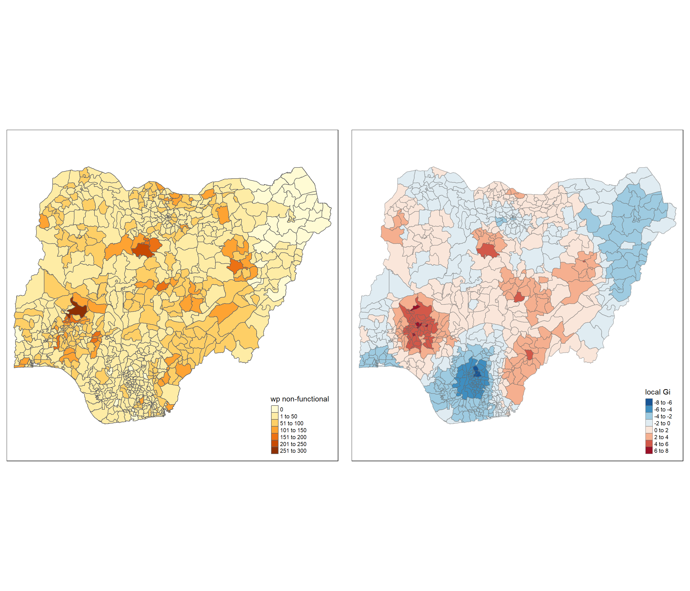

pacman::p_load(sf, tidyverse, tmap, spdep, funModeling)Take-home Exercise 1: Geospatial Analytics for Social Good
Overview
In this take-home exercise, with the purpose to address the issue of water supply in Nigeria, I will be using global and local measures of spatial Association techniques to reveal the spatial patterns of Non-functional water points in Nigeria.
The Data
Aspatial data
The aspatial data includes the water point data that can be downloaded from WPdx+ Global Data Repository. For this analysis, Shapefile data format is downloaded. The shapefile includes global water point data, the Nigeria water point data which will be used in our analysis is filtered in data importing section. The files’ names are renamed to “geo_export” for easier use.
Geospatial data
The geospatial data includes the Nigeria Level-2 Administratie Boundary (which is also known as Local Government Data LGA) polygon features GIS data which can be downloaded from geoBoundaries. In “Download geoBoundaries” section, key in “Nigeria” to Name, and download the ADM2 2020 data file. The files with name “geoBoundaries-NGA-ADM2” are used.
Getting Started
In this exercise, the following R packages will be used:
sf for importing, managing, and processing geospatial data
tidyverse for importing, wrangling, and visualizing data
tmap for plotting cartographic quality choropleth map
spdep for computing spatial weights, global and local spatial autocorrelation statistics
funModeling for Exploratory Data Analysis (EDA)
The code chunk below installs and loads R packages into R environment.
Importing the data into R environment
Importing water point shapefile into R environment
The code chunk below uses st_read() of sf package to import water point data geo_export shapefile into R and save as simple feature data frame called wp.
st_transform() of sf package is used to transform original geographic coordinate reference system (CRS) WGS84 to EPSG:26391 Minna/Nigeria West Belt, which is more appropriate for our analysis.
filter() of dplyr package is used to extract water point records of Nigeria.
wp <- st_read(dsn = "data/aspatial",
layer = "geo_export") %>%
st_transform(crs = 26391) %>%
filter(clean_coun == "Nigeria")Reading layer `geo_export’ from data source
`D:\GuanboShao\ISSS624\Take-home_Ex1\data\aspatial’ using driver `ESRI Shapefile’
Simple feature collection with 362604 features and 72 fields
Geometry type: POINT
Dimension: XY
Bounding box: xmin: -91.75435 ymin: -27.31495 xmax: 92.32694 ymax: 26.65254
Geodetic CRS: WGS84(DD)
From the output message, the simple feature data frame has 362604 features and 72 fields.
The code chunk below checks the CRS of wp.
st_crs(wp)Coordinate Reference System:
User input: EPSG:26391
wkt:
PROJCRS[“Minna / Nigeria West Belt”,
BASEGEOGCRS[“Minna”,
DATUM[“Minna”,
ELLIPSOID[“Clarke 1880 (RGS)”,6378249.145,293.465,
LENGTHUNIT[“metre”,1]]],
PRIMEM[“Greenwich”,0,
ANGLEUNIT[“degree”,0.0174532925199433]],
ID[“EPSG”,4263]],
CONVERSION[“Nigeria West Belt”,
METHOD[“Transverse Mercator”,
ID[“EPSG”,9807]],
PARAMETER[“Latitude of natural origin”,4,
ANGLEUNIT[“degree”,0.0174532925199433],
ID[“EPSG”,8801]],
PARAMETER[“Longitude of natural origin”,4.5,
ANGLEUNIT[“degree”,0.0174532925199433],
ID[“EPSG”,8802]],
PARAMETER[“Scale factor at natural origin”,0.99975,
SCALEUNIT[“unity”,1],
ID[“EPSG”,8805]],
PARAMETER[“False easting”,230738.26,
LENGTHUNIT[“metre”,1],
ID[“EPSG”,8806]],
PARAMETER[“False northing”,0,
LENGTHUNIT[“metre”,1],
ID[“EPSG”,8807]]],
CS[Cartesian,2],
AXIS[“(E)”,east,
ORDER[1],
LENGTHUNIT[“metre”,1]],
AXIS[“(N)”,north,
ORDER[2],
LENGTHUNIT[“metre”,1]],
USAGE[
SCOPE[“Engineering survey, topographic mapping.”],
AREA[“Nigeria - onshore west of 6°30’E, onshore and offshore shelf.”],
BBOX[3.57,2.69,13.9,6.5]],
ID[“EPSG”,26391]]
The coordinates system has been changed to ESPG code 26391, which is Nigeria West Belt.
The code chunk below uses write_rds() of readr package to save the extracted sf data table wp into rds data format file called wp_nga and is saved in data folder.
wp_nga <- write_rds(wp, "data/wp_nga.rds")Importing Nigeria LGA boundary data into R environment
Similar to importing water point shapefile, the geospatial data geoBoundaries-NGA-ADM2 shapefile is imported into R and saved as simple feature data frame called nga.
nga <- st_read(dsn = "data/geospatial",
layer = "geoBoundaries-NGA-ADM2") %>%
st_transform(crs = 26391)The code chunk below checks the CRS of nga.
st_crs(nga)Data Wrangling
Recording NA values into string
The code chunk below uses replace_na() to recode all NA values in status_cle field into Unknown.
mutate() of dplyr package is used to derive new variables called Unknown.
wp_nga <- read_rds("data/wp_nga.rds") %>%
mutate(status_cle =
replace_na(status_cle, "Unknown"))EDA
The code chunk below uses freq() of funModeling package to display the distribution of status_cle field in wp_nga.
freq(data = wp_nga,
input = 'status_cle')
According to the distribution diagram of each status, the proportion of functional water points includes Functional, Functional but not in use, and Functional but needs repair, which is 54.88% in total. The proportion of non-functional water points includes Non-Functional, Non-Functional due to dry season, Abandoned/Decommissioned, Abandoned, and Non functional due to dry season which is 33.9% in total.
Extracting Water Point Data
In this section, I will use filter() to extract water point records by using classes in status_cle field.
Extracting functional water point
The code chunk below uses filter() to select functional water points from wp_nga and name as wp_functional.
wp_functional <- wp_nga %>%
filter(status_cle %in%
c("Functional",
"Functional but not in use",
"Functional but needs repair"))The code chunk below uses freq() to display the distribution of functional water points.
freq(data = wp_functional,
input = 'status_cle')Extracting non-functional water point
The code chunk below uses filter() to select non-functional water points from wp_nga and name as wp_nonfunctional.
wp_nonfunctional <- wp_nga %>%
filter(status_cle %in%
c("Non-Functional",
"Non-Functional due to dry season",
"Abandoned/Decommissioned",
"Abandoned",
"Non functional due to dry season"))The code chunk below uses freq() to display the distribution of non-functional water points.
freq(data = wp_nonfunctional,
input = 'status_cle')Extracting water point with Unknown class
The code chunk below uses filter() to select Unknown water points from wp_nga and name as wp_unknown.
wp_unknown <- wp_nga %>%
filter(status_cle %in%
c("Unknown"))The code chunk below uses freq() to display the distribution of unknown water points.
freq(data = wp_unknown,
input = 'status_cle')Performing Point-in-Polygon Count
In this section, st_intersects() of sf package to identify the water points located in each region of Nigeria, length() of Base R is used to calculate the number of water points in each region.
mutate() of dplyr package is used to derive new variables namely total wp, wp functional, wp non-functional, and wp unknown.
nga_wp <- nga %>%
mutate(`total wp` = lengths(st_intersects(nga, wp_nga))) %>%
mutate(`wp functional` = lengths(st_intersects(nga, wp_functional))) %>%
mutate(`wp non-functional` = lengths(st_intersects(nga, wp_nonfunctional))) %>%
mutate(`wp unknown` = lengths(st_intersects(nga, wp_unknown)))Saving the Analytical Data Table
The code chunk below uses mutate() to derive 2 fields namely pct_functional and pct_non-functional, which is the proportion of functional water points and non-functional water points in each region.
nga_wp <- nga_wp %>%
mutate(pct_functional = `wp functional`/`total wp`) %>%
mutate(`pct_non-functional` = `wp non-functional`/`total wp`)The code chunk below uses write_rds() of readr package to save the extracted sf data table nga_wp into rds data format file called wp_nga and is saved in data folder.
write_rds(nga_wp, "data/wp_nga.rds")Upon completing the above sections, we achieve an rds data format file called wp_nga which has a file size of 2.1MB. This allows us to keep a small size data file and delete raw data files which occupy space of several gigabytes. In the following section, wp_nga.rds will be used for analysis. A RMarkdown code {r eval=FALSE} is used to skip evaluating previous code chunks and exclude their results so that the wp_nga.rds file will not be modified. If need to reproduce the previous sections, please change {r eval=FALSE} to {r} then proceed to run the code chunks.
Visualizing the Spatial Distribution of Water Points
Plotting thematic maps by using qtm()
qtm() of tmap package provides a quick visualization of thematic map.
tmap_arrange() is used to create multiple stand-alone maps.
nga_wp <- read_rds("data/wp_nga.rds")
total <- qtm(nga_wp, "total wp")
wp_functional <- qtm(nga_wp, "wp functional")
wp_nonfunctional <- qtm(nga_wp, "wp non-functional")
unknown <- qtm(nga_wp, "wp unknown")
tmap_arrange(total, wp_functional, wp_nonfunctional, unknown, asp = 1, ncol = 2)
Plotting thematic maps by using tmap elements
tm_shape() is used to define a spatial data object.
tm_fill() is used to fill the polygons, a classification method is selected by style option. An equal map is obtained by setting style = “equal”, the number of categories n is set to 4. A quantile map is obtained by setting style = “quantile”, and n = 4.
tm_layout() is used to customize the map layout, including title and legend.
tm_borders() is used to define the borders of the polygons, alpha defines the transparency of line.
tmap_arrange() is used to create multiple stand-alone maps.
map_equal <- tm_shape(nga_wp)+
tm_fill(c("wp functional", "wp non-functional"),
n = 4,
style = "equal",
palette = "Blues") +
tm_layout(main.title = "Distribution of Water Points \n(Equal classification)",
main.title.position = "center",
main.title.size = 1.5,
legend.height = 0.45,
legend.width = 0.35,
legend.outside = FALSE,
legend.position = c("right", "bottom"),
frame = FALSE) +
tm_borders(alpha = 0.5)
map_quantile <- tm_shape(nga_wp)+
tm_fill(c("wp functional", "wp non-functional"),
n = 4,
style = "quantile",
palette = "Greens") +
tm_layout(main.title = "Distribution of Water Points \n(Quantile classification)",
main.title.position = "center",
main.title.size = 1.5,
legend.height = 0.45,
legend.width = 0.35,
legend.outside = FALSE,
legend.position = c("right", "bottom"),
frame = FALSE) +
tm_borders(alpha = 0.5)
tmap_arrange(map_equal, map_quantile, asp = 1, ncol = 2)
Cluster and Outlier Analysis
Computing contiguity spatial weights
poly2nb() of spdep package is used to compute contiguity weight matrices of Nigeria. This function with default setting queen = TRUE builds a neighbours list based on regions with contiguous boundaries.
wm_q <- poly2nb(nga_wp,
queen = TRUE)
set.ZeroPolicyOption(TRUE)[1] FALSEsummary(wm_q)Neighbour list object:
Number of regions: 774
Number of nonzero links: 4440
Percentage nonzero weights: 0.7411414
Average number of links: 5.736434
1 region with no links:
86
Link number distribution:
0 1 2 3 4 5 6 7 8 9 10 11 12 14
1 2 14 57 125 182 140 122 72 41 12 4 1 1
2 least connected regions:
138 560 with 1 link
1 most connected region:
508 with 14 linksIn Nigeria, there are 774 regions, the most connected region has 14 neighbors. There are 2 regions with only 1 neighbor.
Row-standardized weights matrix
nb2listw() of spdep package is used to assign spatial weights to each polygon in neighbors list. style is set to ‘W’ for row standardized option. zero.policy is set to TRUE to insert weights vectors of zero length for regions without neighbor in the neighbors list.
rswm_q <- nb2listw(wm_q,
style="W",
zero.policy = TRUE)
rswm_qCharacteristics of weights list object:
Neighbour list object:
Number of regions: 774
Number of nonzero links: 4440
Percentage nonzero weights: 0.7411414
Average number of links: 5.736434
1 region with no links:
86
Weights style: W
Weights constants summary:
n nn S0 S1 S2
W 773 597529 773 285.0658 3198.414Maron’s I test
moran.test() of spdep package is used to perform Moran’s I statistics testing which measures the spatial autocorrelation and how one region is similar to its neighbors by standardizing the spatial autocovariance by the variance of data.
moran.test(nga_wp$`wp non-functional`,
listw=rswm_q,
zero.policy = TRUE,
na.action=na.omit)
Moran I test under randomisation
data: nga_wp$`wp non-functional`
weights: rswm_q n reduced by no-neighbour observations
Moran I statistic standard deviate = 20.07, p-value < 2.2e-16
alternative hypothesis: greater
sample estimates:
Moran I statistic Expectation Variance
0.4345111969 -0.0012953368 0.0004715237 The p-value for non-functional water points is statistically significant, therefore the spatial distribution is more spatially clustered than would be expected if underlying spatial processes were random.
Computing Monte Carlo Moran’s I
moran.mc() of spdep package is used to perform permutation test for Moran’s I statistic. nsim = 999 means 1000 simulations will be performed.
set.seed(1234)
bperm= moran.mc(nga_wp$`wp non-functional`,
listw=rswm_q,
nsim=999,
zero.policy = TRUE,
na.action=na.omit)
bperm
Monte-Carlo simulation of Moran I
data: nga_wp$`wp non-functional`
weights: rswm_q
number of simulations + 1: 1000
statistic = 0.43451, observed rank = 1000, p-value = 0.001
alternative hypothesis: greaterThe Moran’s I value is 0.43451, therefore we can reject the null hypothesis and conclude that positive spatial autocorrelation is occurring.
Visualizing Monte Carlo Moran’s I
hist() and abline() of R Graphics are used to plot the distribution of statistical values.
hist(bperm$res,
freq=TRUE,
breaks=20,
xlab="Simulated Moran's I")
abline(v=0,
col="red") Geary’s C test
geary.test() of spdep package is used to perform Geary’s C test which measures spatial autocorrelation and determine whether adjacent similar observations are correlated by summing the square differences between pairs of data.
geary.test(nga_wp$`wp non-functional`,
listw=rswm_q)
Geary C test under randomisation
data: nga_wp$`wp non-functional`
weights: rswm_q
Geary C statistic standard deviate = 14.479, p-value < 2.2e-16
alternative hypothesis: Expectation greater than statistic
sample estimates:
Geary C statistic Expectation Variance
0.6166737225 1.0000000000 0.0007009361 The Geary’s C test statistic is 0.6166737225 < 1, therefore there is a positive spatial autocorrrelation and clustered.
Computing Monte Carlo Geary’s C
geary.mc() of spdep package is used to perform permutation test for Geary’s C statistic. nsim = 999 means 1000 simulations will be performed.
set.seed(1234)
bperm=geary.mc(nga_wp$`wp non-functional`,
listw=rswm_q,
nsim=999)
bperm
Monte-Carlo simulation of Geary C
data: nga_wp$`wp non-functional`
weights: rswm_q
number of simulations + 1: 1000
statistic = 0.61667, observed rank = 1, p-value = 0.001
alternative hypothesis: greaterThe Monte Carlo Geary’s C test statistic shows same result as Geary’s C test result which is 0.61667 < 1, therefore there is a positive spatial autocorrrelation and clustered.
Visualizing Monte Carlo Geary’s C
hist() and abline() of R Graphics are used to plot the distribution of statistical values.
hist(bperm$res,
freq=TRUE,
breaks=20,
xlab="Simulated Geary's C")
abline(v=1,
col="red") 
Compute Moran’s I correlogram
sp.correlogram() of spdep package is used to compute a 5-lag spatial correlogram of non-functional water points. The global spatial autocorrelation is set to Moran’s I by method = “I”.
plot() of base Graph is used to plot the output.
MI_corr <- sp.correlogram(wm_q,
nga_wp$`wp non-functional`,
order=5,
method="I",
style="W")
plot(MI_corr)
print(MI_corr)Spatial correlogram for nga_wp$`wp non-functional`
method: Moran's I
estimate expectation variance standard deviate Pr(I) two sided
1 (773) 4.3451e-01 -1.2953e-03 4.7152e-04 20.0698 < 2.2e-16
2 (773) 2.6672e-01 -1.2953e-03 2.0206e-04 18.8546 < 2.2e-16
3 (773) 1.9545e-01 -1.2953e-03 1.2189e-04 17.8208 < 2.2e-16
4 (773) 1.4034e-01 -1.2953e-03 8.7591e-05 15.1333 < 2.2e-16
5 (773) 6.4101e-02 -1.2953e-03 6.8780e-05 7.8854 3.136e-15
1 (773) ***
2 (773) ***
3 (773) ***
4 (773) ***
5 (773) ***
---
Signif. codes: 0 '***' 0.001 '**' 0.01 '*' 0.05 '.' 0.1 ' ' 1Compute Geary’s C correlogram
sp.correlogram() of spdep package is used to compute a 5-lag spatial correlogram of non-functional water points. The global spatial autocorrelation is set to Geary’s C by method = “C”.
plot() of base Graph is used to plot the output.
GC_corr <- sp.correlogram(wm_q,
nga_wp$`wp non-functional`,
order=5,
method="C",
style="W")
plot(GC_corr)print(GC_corr)Spatial correlogram for nga_wp$`wp non-functional`
method: Geary's C
estimate expectation variance standard deviate Pr(I) two sided
1 (773) 0.61667372 1.00000000 0.00070094 -14.4787 < 2.2e-16 ***
2 (773) 0.74713982 1.00000000 0.00038527 -12.8824 < 2.2e-16 ***
3 (773) 0.80930633 1.00000000 0.00027289 -11.5437 < 2.2e-16 ***
4 (773) 0.86695944 1.00000000 0.00024425 -8.5127 < 2.2e-16 ***
5 (773) 0.94962924 1.00000000 0.00024046 -3.2483 0.001161 **
---
Signif. codes: 0 '***' 0.001 '**' 0.01 '*' 0.05 '.' 0.1 ' ' 1Computing local Moran’s I
order() is used to sort data according to a specified variable.
localmoran() of spdep package is used to compute Ii values, given a set of zi values and a listw object providing neighbor weighting information.
fips <- order(nga_wp$shapeName)
localMI <- localmoran(nga_wp$`wp non-functional`, rswm_q)
head(localMI) Ii E.Ii Var.Ii Z.Ii Pr(z != E(Ii))
1 -0.323893825 -1.000522e-03 0.1926556506 -0.73564479 0.46194690
2 0.051085631 -1.990735e-05 0.0051226893 0.71403411 0.47520609
3 1.259412104 -1.629252e-03 0.4185750594 1.94913830 0.05127891
4 -0.034612326 -5.435755e-05 0.0059633554 -0.44751011 0.65450679
5 0.009642434 -2.593946e-04 0.0399358755 0.04954888 0.96048189
6 0.026645016 -1.850193e-06 0.0002029881 1.87029807 0.06144244In the output above, the columns are:
Ii: the local Moran’s I statistics
E.Ii: the expectation of local moran statistic under the randomisation hypothesis
Var.Ii: the variance of local moran statistic under the randomisation hypothesis
Z.Ii:the standard deviate of local moran statistic
Pr(): the p-value of local moran statistic
printCoefmat() is used to list the content of the local Moran matrix.
printCoefmat(data.frame(
localMI[fips,],
row.names = nga_wp$ID[fips]),
check.names = FALSE) Ii E.Ii Var.Ii Z.Ii Pr.z....E.Ii..
[1,] -3.2389e-01 -1.0005e-03 1.9266e-01 -7.3564e-01 0.4619
[2,] 5.1086e-02 -1.9907e-05 5.1227e-03 7.1403e-01 0.4752
[3,] 1.2594e+00 -1.6293e-03 4.1858e-01 1.9491e+00 0.0513
[4,] -3.4612e-02 -5.4358e-05 5.9634e-03 -4.4751e-01 0.6545
[5,] 9.6424e-03 -2.5939e-04 3.9936e-02 4.9549e-02 0.9605
[6,] 2.6645e-02 -1.8502e-06 2.0299e-04 1.8703e+00 0.0614
[7,] 2.3161e-01 -6.1696e-04 7.9024e-02 8.2609e-01 0.4088
[8,] 1.4913e-01 -8.6740e-05 1.6717e-02 1.1541e+00 0.2485
[9,] 6.6088e-01 -5.1563e-04 7.9365e-02 2.3477e+00 0.0189
[10,] 1.9168e-01 -2.2908e-04 2.5127e-02 1.2106e+00 0.2260
[11,] 6.7553e-01 -7.7005e-04 8.4418e-02 2.3277e+00 0.0199
[12,] 1.3203e-01 -9.2843e-04 8.8928e-02 4.4585e-01 0.6557
[13,] 1.6319e-02 -4.0991e-05 6.3123e-03 2.0592e-01 0.8369
[14,] -2.6444e-02 -1.9907e-05 1.9085e-03 -6.0486e-01 0.5453
[15,] -3.0304e-01 -1.0067e-02 1.0933e+00 -2.8019e-01 0.7793
[16,] 7.3176e-02 -9.2843e-04 1.4284e-01 1.9607e-01 0.8446
[17,] 2.4313e-02 -1.9907e-05 5.1227e-03 3.3997e-01 0.7339
[18,] 5.8751e-01 -1.1800e-03 1.8151e-01 1.3818e+00 0.1670
[19,] -5.1355e-03 -8.6740e-05 1.1116e-02 -4.7886e-02 0.9618
[20,] -2.6727e-02 -2.7474e-05 4.2308e-03 -4.1048e-01 0.6815
[21,] -6.1362e-02 -1.4481e-04 2.2298e-02 -4.0996e-01 0.6818
[22,] 2.9001e-01 -1.3310e-03 3.4205e-01 4.9815e-01 0.6184
[23,] 8.3940e-01 -1.1932e-03 1.8352e-01 1.9622e+00 0.0497
[24,] 1.5797e-03 -2.7474e-05 5.2954e-03 2.2086e-02 0.9824
[25,] 1.3192e-01 -8.6740e-05 9.5156e-03 1.3532e+00 0.1760
[26,] 8.0142e-01 -9.4008e-04 1.8103e-01 1.8858e+00 0.0593
[27,] 8.4161e-01 -1.6293e-03 2.5049e-01 1.6848e+00 0.0920
[28,] 2.1373e-02 -1.2108e-02 1.3123e+00 2.9226e-02 0.9767
[29,] 3.1037e-01 -2.2335e-04 2.4499e-02 1.9843e+00 0.0472
[30,] 2.5315e-01 -3.1883e-04 3.0557e-02 1.4500e+00 0.1471
[31,] 8.3800e-03 -6.3560e-06 8.1460e-04 2.9383e-01 0.7689
[32,] 1.0912e+00 -1.5519e-03 3.9872e-01 1.7306e+00 0.0835
[33,] 8.1205e-02 -1.9907e-05 2.5514e-03 1.6081e+00 0.1078
[34,] 2.2568e-01 -2.7474e-05 3.0141e-03 4.1111e+00 0.0000
[35,] -1.7185e-01 -3.5442e-04 3.8871e-02 -8.6982e-01 0.3844
[36,] 3.6634e+00 -1.7518e-02 1.6501e+00 2.8656e+00 0.0042
[37,] -9.6951e-02 -6.9607e-05 4.8340e-03 -1.3934e+00 0.1635
[38,] 2.6233e+00 -5.7875e-03 6.3128e-01 3.3090e+00 0.0009
[39,] 1.8744e+00 -1.5766e-02 2.9909e+00 1.0929e+00 0.2744
[40,] 2.9372e+00 -3.7848e-03 7.2675e-01 3.4498e+00 0.0006
[41,] 4.1159e+00 -1.4106e-02 2.1417e+00 2.8221e+00 0.0048
[42,] 7.9208e-01 -8.2139e-03 1.5702e+00 6.3866e-01 0.5230
[43,] 7.5521e-01 -1.3310e-03 3.4205e-01 1.2936e+00 0.1958
[44,] -8.9267e-02 -2.0065e-04 2.5711e-02 -5.5546e-01 0.5786
[45,] -3.8477e-01 -1.0628e-03 2.7321e-01 -7.3410e-01 0.4629
[46,] 1.7244e-02 -1.8502e-06 3.5662e-04 9.1324e-01 0.3611
[47,] -5.8736e-01 -4.4053e-03 6.7542e-01 -7.0933e-01 0.4781
[48,] 3.8133e-02 -1.0896e-05 2.1001e-03 8.3234e-01 0.4052
[49,] -2.6834e-01 -9.2843e-04 1.0177e-01 -8.3825e-01 0.4019
[50,] -3.6521e-01 -1.7410e-04 1.6689e-02 -2.8257e+00 0.0047
[51,] 6.4124e-01 -1.0628e-03 1.0179e-01 2.0132e+00 0.0441
[52,] 5.2349e-01 -6.1696e-04 7.9024e-02 1.8644e+00 0.0623
[53,] 5.1870e-01 -5.6970e-04 5.4588e-02 2.2225e+00 0.0262
[54,] 6.8921e-01 -7.1713e-04 7.8622e-02 2.4605e+00 0.0139
[55,] 7.4822e-01 -8.8152e-04 2.2664e-01 1.5735e+00 0.1156
[56,] 5.8729e-01 -1.6293e-03 2.5049e-01 1.1767e+00 0.2393
[57,] 9.1492e-01 -1.2611e-03 2.4277e-01 1.8594e+00 0.0630
[58,] 7.2393e-01 -1.3310e-03 1.4583e-01 1.8992e+00 0.0575
[59,] -3.0946e-02 -5.2432e-04 8.0702e-02 -1.0709e-01 0.9147
[60,] 3.4946e-03 -3.3691e-07 3.6964e-05 5.7485e-01 0.5654
[61,] 7.1703e-02 -2.9159e-04 4.4891e-02 3.3979e-01 0.7340
[62,] 1.1181e+00 -1.6293e-03 2.0847e-01 2.4524e+00 0.0142
[63,] 5.9595e-01 -6.0753e-04 7.7817e-02 2.1385e+00 0.0325
[64,] -7.0393e-02 -2.9508e-05 2.8289e-03 -1.3229e+00 0.1859
[65,] 4.0203e-02 -3.1883e-04 4.9084e-02 1.8290e-01 0.8549
[66,] 9.9000e-02 -1.1271e-03 1.4429e-01 2.6360e-01 0.7921
[67,] 1.1358e-01 -5.4315e-06 5.9589e-04 4.6530e+00 0.0000
[68,] 9.9712e-01 -1.1271e-03 4.3512e-01 1.5133e+00 0.1302
[69,] 9.5235e-01 -1.1271e-03 9.5814e-02 3.0803e+00 0.0021
[70,] 1.5713e+00 -2.4877e-03 3.8215e-01 2.5459e+00 0.0109
[71,] 1.3686e+00 -3.5498e-03 3.0105e-01 2.5008e+00 0.0124
[72,] 9.2591e-02 -1.4944e-04 1.4325e-02 7.7487e-01 0.4384
[73,] -3.7167e-02 -8.3227e-05 1.0666e-02 -3.5907e-01 0.7195
[74,] -3.1529e-02 -1.2665e-04 1.6231e-02 -2.4649e-01 0.8053
[75,] -9.2649e-03 -1.9529e-04 2.1421e-02 -6.1968e-02 0.9506
[76,] -3.7980e-02 -2.4049e-06 2.3056e-04 -2.5011e+00 0.0124
[77,] 7.1562e-01 -1.0628e-03 1.3607e-01 1.9428e+00 0.0520
[78,] 8.4420e-01 -1.6293e-03 1.7846e-01 2.0022e+00 0.0453
[79,] 7.2595e-01 -1.0005e-03 1.5392e-01 1.8529e+00 0.0639
[80,] 5.3944e-01 -4.8082e-04 7.4010e-02 1.9846e+00 0.0472
[81,] 3.4727e+00 -9.3031e-03 1.4193e+00 2.9227e+00 0.0035
[82,] 1.1126e+00 -3.3223e-03 8.5209e-01 1.2089e+00 0.2267
[83,] -4.1351e-01 -3.9190e-04 7.5509e-02 -1.5034e+00 0.1327
[84,] -1.6812e-01 -5.4358e-05 8.3705e-03 -1.8370e+00 0.0662
[85,] -1.0396e-01 -3.8587e-05 4.2333e-03 -1.5972e+00 0.1102
[86,] 0.0000e+00 0.0000e+00 0.0000e+00 NaN NaN
[87,] 9.8704e-02 -1.4944e-04 1.9150e-02 7.1435e-01 0.4750
[88,] 1.3257e-01 -1.1271e-03 1.4429e-01 3.5198e-01 0.7249
[89,] 8.6097e-01 -5.0729e-03 5.5373e-01 1.1638e+00 0.2445
[90,] 2.7995e-01 -1.6139e-03 1.3714e-01 7.6034e-01 0.4471
[91,] 1.2594e+00 -1.6293e-03 3.1352e-01 2.2521e+00 0.0243
[92,] 1.5556e+00 -3.1023e-03 3.9638e-01 2.4758e+00 0.0133
[93,] 1.5340e-02 -2.7474e-05 3.5211e-03 2.5898e-01 0.7957
[94,] -2.5300e-03 -1.1800e-03 1.1300e-01 -4.0159e-03 0.9968
[95,] 7.6855e-02 -6.6464e-05 8.5177e-03 8.3347e-01 0.4046
[96,] 1.0441e-01 -8.3227e-05 9.1302e-03 1.0936e+00 0.2741
[97,] 1.3641e-02 -1.0187e-04 1.5687e-02 1.0972e-01 0.9126
[98,] 1.1455e-01 -8.6740e-05 1.3357e-02 9.9194e-01 0.3212
[99,] 1.7310e+00 -5.0729e-03 7.7725e-01 1.9692e+00 0.0489
[100,] 2.3984e-01 -3.9948e-04 6.1495e-02 9.6877e-01 0.3327
[101,] -3.3258e-02 -1.0005e-03 1.5392e-01 -8.2221e-02 0.9345
[102,] 1.3115e+00 -1.5369e-03 2.3631e-01 2.7011e+00 0.0069
[103,] 4.0359e-01 -6.6611e-04 6.3819e-02 1.6002e+00 0.1095
[104,] 1.5876e-01 -1.6911e-04 1.6210e-02 1.2483e+00 0.2119
[105,] -1.4206e-01 -1.0187e-04 1.3055e-02 -1.2424e+00 0.2141
[106,] -2.7773e-01 -1.2665e-04 4.8946e-02 -1.2548e+00 0.2096
[107,] 2.4930e+00 -3.2114e-03 6.1700e-01 3.1779e+00 0.0015
[108,] -5.8784e-02 -1.0187e-04 1.3055e-02 -5.1359e-01 0.6075
[109,] -1.5672e-01 -3.5442e-04 4.5409e-02 -7.3377e-01 0.4631
[110,] -4.1380e-01 -7.3580e-03 9.3610e-01 -4.2009e-01 0.6744
[111,] -5.1571e-03 -6.1696e-04 5.9113e-02 -1.8674e-02 0.9851
[112,] 1.4570e+00 -5.4960e-03 4.1812e-01 2.2617e+00 0.0237
[113,] -3.8941e-01 -6.1696e-04 7.9024e-02 -1.3831e+00 0.1666
[114,] 3.1656e-01 -5.2432e-04 6.7164e-02 1.2235e+00 0.2211
[115,] 1.1080e+00 -1.6293e-03 1.5595e-01 2.8100e+00 0.0050
[116,] -3.9244e-03 -2.7474e-05 4.2308e-03 -5.9912e-02 0.9522
[117,] -2.2026e-01 -2.2908e-04 5.8936e-02 -9.0634e-01 0.3648
[118,] 2.6413e+00 -7.0289e-03 1.0748e+00 2.5544e+00 0.0106
[119,] 5.0520e-01 -2.2335e-04 2.8619e-02 2.9876e+00 0.0028
[120,] 3.8506e-01 -1.2240e-04 2.3590e-02 2.5079e+00 0.0121
[121,] 6.1236e-01 -1.4027e-03 2.1571e-01 1.3215e+00 0.1863
[122,] 1.0879e+00 -1.6293e-03 2.0847e-01 2.3861e+00 0.0170
[123,] -1.6056e-01 -2.5939e-04 2.2071e-02 -1.0790e+00 0.2806
[124,] 1.1130e+00 -1.7736e-03 2.2691e-01 2.3403e+00 0.0193
[125,] -2.3771e-02 -1.7410e-04 2.2310e-02 -1.5798e-01 0.8745
[126,] 2.9992e-01 -6.1696e-04 2.3831e-01 6.1564e-01 0.5381
[127,] 4.5271e-03 -3.3691e-07 5.1884e-05 6.2854e-01 0.5297
[128,] -3.1431e-02 -2.5939e-04 3.9936e-02 -1.5598e-01 0.8760
[129,] 1.9890e-01 -8.8152e-04 1.1288e-01 5.9464e-01 0.5521
[130,] 3.5611e-02 -1.7410e-04 1.9098e-02 2.5895e-01 0.7957
[131,] 8.8489e-01 -2.5854e-03 3.9712e-01 1.4083e+00 0.1590
[132,] 4.8044e-01 -5.2432e-04 5.0242e-02 2.1458e+00 0.0319
[133,] 5.1475e-01 -7.5951e-04 9.7268e-02 1.6529e+00 0.0983
[134,] 8.0339e-01 -1.4027e-03 2.6999e-01 1.5488e+00 0.1214
[135,] 3.2114e-01 -2.5329e-04 4.8809e-02 1.4547e+00 0.1457
[136,] -5.6840e-01 -2.2908e-04 5.8936e-02 -2.3404e+00 0.0193
[137,] 1.1020e-01 -3.8587e-05 7.4373e-03 1.2783e+00 0.2011
[138,] 5.9203e-03 -3.3691e-07 2.6077e-04 3.6664e-01 0.7139
[139,] 5.5138e-02 -5.1584e-05 6.6109e-03 6.7878e-01 0.4973
[140,] 9.6015e-01 -1.0628e-03 2.7321e-01 1.8389e+00 0.0659
[141,] -9.5507e-01 -1.3310e-03 1.2744e-01 -2.6717e+00 0.0075
[142,] -1.7897e-01 -1.6911e-04 3.2590e-02 -9.9043e-01 0.3220
[143,] 1.0225e+00 -1.4027e-03 2.1571e-01 2.2046e+00 0.0275
[144,] 1.7306e-02 -1.8243e-05 2.3381e-03 3.5827e-01 0.7201
[145,] 6.0340e-01 -9.2843e-04 1.4284e-01 1.5990e+00 0.1098
[146,] 1.2026e+00 -1.6293e-03 1.5595e-01 3.0496e+00 0.0023
[147,] 2.1291e-01 -1.1271e-03 1.2351e-01 6.0903e-01 0.5425
[148,] 6.0388e-01 -5.2120e-03 9.9937e-01 6.0928e-01 0.5423
[149,] 2.5406e-02 -1.8502e-06 3.5662e-04 1.3454e+00 0.1785
[150,] 8.7051e-02 -1.2665e-04 1.3894e-02 7.3959e-01 0.4595
[151,] -2.4850e-01 -2.9159e-04 3.7361e-02 -1.2841e+00 0.1991
[152,] 5.2392e-03 -1.0896e-05 1.1954e-03 1.5185e-01 0.8793
[153,] 2.4389e-01 -3.6164e-04 1.3972e-01 6.5343e-01 0.5135
[154,] 4.0106e-01 -7.5951e-04 1.9530e-01 9.0925e-01 0.3632
[155,] -1.5377e-01 -4.7250e-04 6.0530e-02 -6.2311e-01 0.5332
[156,] 5.3629e-01 -1.0628e-03 1.3607e-01 1.4567e+00 0.1452
[157,] 8.9625e-01 -1.4764e-03 1.4133e-01 2.3879e+00 0.0169
[158,] 3.1740e-02 -6.5631e-04 1.2642e-01 9.1116e-02 0.9274
[159,] 7.6727e-01 -1.4027e-03 1.5368e-01 1.9608e+00 0.0499
[160,] 1.2594e+00 -1.6293e-03 2.0847e-01 2.7619e+00 0.0057
[161,] -8.4960e-03 -1.0896e-05 1.3964e-03 -2.2706e-01 0.8204
[162,] -6.3667e-02 -5.4358e-05 4.6261e-03 -9.3527e-01 0.3496
[163,] 1.1948e+00 -1.6139e-03 1.5448e-01 3.0440e+00 0.0023
[164,] 2.0795e+00 -5.2120e-03 5.6884e-01 2.7640e+00 0.0057
[165,] 5.5516e-01 -6.1696e-04 9.4952e-02 1.8036e+00 0.0713
[166,] -2.2053e-01 -1.4764e-03 1.4133e-01 -5.8267e-01 0.5601
[167,] -1.9060e-01 -1.7410e-04 1.9098e-02 -1.3780e+00 0.1682
[168,] -6.0360e-02 -6.0753e-04 7.7817e-02 -2.1420e-01 0.8304
[169,] 1.4145e-01 -4.3921e-04 6.7608e-02 5.4568e-01 0.5853
[170,] 2.1159e-03 -1.5201e-07 1.9483e-05 4.7940e-01 0.6317
[171,] 3.9816e-01 -1.6928e-03 6.5316e-01 4.9475e-01 0.6208
[172,] 6.6615e-02 -8.3227e-05 2.1415e-02 4.5578e-01 0.6485
[173,] -8.3543e-02 -6.3560e-06 5.4095e-04 -3.5917e+00 0.0003
[174,] 5.1988e+00 -7.3580e-03 1.1248e+00 4.9089e+00 0.0000
[175,] -6.1117e-01 -3.2567e-04 6.2752e-02 -2.4385e+00 0.0147
[176,] 4.1147e-01 -3.2567e-04 5.0137e-02 1.8391e+00 0.0659
[177,] -5.1928e-02 -1.4764e-03 2.2702e-01 -1.0589e-01 0.9157
[178,] -4.9780e-02 -5.4358e-05 8.3705e-03 -5.4351e-01 0.5868
[179,] 1.6985e-01 -6.6464e-05 6.3716e-03 2.1287e+00 0.0333
[180,] 8.7812e-02 -2.0065e-04 5.1623e-02 3.8737e-01 0.6985
[181,] 2.6799e-01 -3.2567e-04 5.0137e-02 1.1983e+00 0.2308
[182,] 6.0643e-01 -7.8659e-03 8.5620e-01 6.6388e-01 0.5068
[183,] 2.1179e-01 -1.4944e-04 2.8799e-02 1.2489e+00 0.2117
[184,] 2.1969e-02 -1.0576e-04 2.0382e-02 1.5463e-01 0.8771
[185,] 1.4005e+00 -5.9361e-03 7.5628e-01 1.6173e+00 0.1058
[186,] -1.0618e+00 -1.3310e-03 2.0470e-01 -2.3439e+00 0.0191
[187,] 6.3314e-01 -1.3171e-03 1.4431e-01 1.6701e+00 0.0949
[188,] 6.8633e-01 -1.6139e-03 1.5448e-01 1.7503e+00 0.0801
[189,] 8.4833e-01 -1.4027e-03 2.1571e-01 1.8296e+00 0.0673
[190,] 9.4656e-01 -1.6293e-03 2.0847e-01 2.0767e+00 0.0378
[191,] 6.9091e-01 -1.4764e-03 1.4133e-01 1.8417e+00 0.0655
[192,] -7.8665e-01 -5.2432e-04 8.0702e-02 -2.7673e+00 0.0057
[193,] 7.7163e-01 -1.3310e-03 2.0470e-01 1.7084e+00 0.0876
[194,] 9.2184e-01 -1.5519e-03 2.3861e-01 1.8903e+00 0.0587
[195,] 7.6622e-01 -1.5519e-03 3.9872e-01 1.2159e+00 0.2240
[196,] -3.7032e-01 -1.7736e-03 1.6974e-01 -8.9454e-01 0.3710
[197,] 3.0807e-01 -4.3921e-04 8.4620e-02 1.0606e+00 0.2889
[198,] 2.7978e-01 -4.3921e-04 6.7608e-02 1.0777e+00 0.2812
[199,] 3.0807e-01 -4.3921e-04 3.7364e-02 1.5960e+00 0.1105
[200,] 2.5359e-01 -5.2432e-04 6.7164e-02 9.8052e-01 0.3268
[201,] -1.2830e-01 -8.7024e-04 1.3390e-01 -3.4823e-01 0.7277
[202,] -6.6490e-02 -2.2335e-04 2.8619e-02 -3.9171e-01 0.6953
[203,] -9.6745e-03 -6.3560e-06 6.9732e-04 -3.6612e-01 0.7143
[204,] 3.5215e-01 -9.4008e-04 1.0304e-01 1.1000e+00 0.2713
[205,] 1.8275e-01 -7.1713e-04 1.3813e-01 4.9365e-01 0.6216
[206,] 2.4589e-01 -6.1696e-04 9.4952e-02 7.9998e-01 0.4237
[207,] 3.5720e-01 -1.6293e-03 2.5049e-01 7.1695e-01 0.4734
[208,] -1.6426e-03 -8.6740e-05 1.1116e-02 -1.4757e-02 0.9882
[209,] -5.9054e-02 -2.2908e-04 3.5270e-02 -3.1323e-01 0.7541
[210,] 1.7603e-01 -1.4944e-04 2.3009e-02 1.1615e+00 0.2455
[211,] 1.5248e-01 -3.2567e-04 2.7709e-02 9.1798e-01 0.3586
[212,] 2.4287e-01 -3.6164e-04 3.9661e-02 1.2213e+00 0.2220
[213,] 1.4342e+00 -1.7736e-03 4.5559e-01 2.1274e+00 0.0334
[214,] 5.2240e-01 -7.7005e-04 9.8617e-02 1.6660e+00 0.0957
[215,] 7.5888e-01 -9.4008e-04 1.4463e-01 1.9979e+00 0.0457
[216,] 1.6444e-01 -4.8082e-04 7.4010e-02 6.0623e-01 0.5444
[217,] 6.0721e-01 -9.2843e-04 1.1888e-01 1.7638e+00 0.0778
[218,] 3.2949e-01 -2.5329e-04 3.8997e-02 1.6698e+00 0.0950
[219,] 1.8108e-01 -1.2611e-03 1.9397e-01 4.1402e-01 0.6789
[220,] -3.2792e-01 -9.4008e-04 1.0304e-01 -1.0186e+00 0.3084
[221,] 2.4549e-02 -1.3171e-03 1.2611e-01 7.2837e-02 0.9419
[222,] 1.7447e-01 -1.3310e-03 1.1313e-01 5.2269e-01 0.6012
[223,] 1.1282e+00 -1.6293e-03 2.0847e-01 2.4745e+00 0.0133
[224,] 9.0930e-01 -4.5350e-03 6.9522e-01 1.0960e+00 0.2731
[225,] 5.8138e-01 -4.8082e-04 4.6076e-02 2.7107e+00 0.0067
[226,] -3.7599e-01 -5.6970e-04 8.7683e-02 -1.2678e+00 0.2049
[227,] -1.2045e-01 -1.3310e-03 1.7036e-01 -2.8861e-01 0.7729
[228,] -1.3345e-01 -3.9948e-04 7.6969e-02 -4.7959e-01 0.6315
[229,] -2.0381e-01 -6.9607e-05 8.9205e-03 -2.1571e+00 0.0310
[230,] -7.6187e-01 -1.0460e-02 1.3266e+00 -6.5240e-01 0.5141
[231,] 2.7240e-02 -8.8152e-04 8.4439e-02 9.6776e-02 0.9229
[232,] 5.0871e-01 -1.2611e-03 2.4277e-01 1.0350e+00 0.3007
[233,] 2.6524e-01 -1.9408e-03 1.8571e-01 6.1999e-01 0.5353
[234,] -5.1335e-01 -8.2484e-04 9.0420e-02 -1.7044e+00 0.0883
[235,] -2.9015e-02 -5.4315e-06 8.3643e-04 -1.0030e+00 0.3158
[236,] 1.1755e-01 -5.1563e-04 9.9335e-02 3.7461e-01 0.7080
[237,] 1.3126e+00 -3.6663e-03 4.6817e-01 1.9238e+00 0.0544
[238,] -1.4848e-01 -1.4764e-03 2.8414e-01 -2.7577e-01 0.7827
[239,] 3.7775e-02 -9.8850e-04 1.5208e-01 9.9400e-02 0.9208
[240,] 7.7890e-01 -8.7024e-04 1.3390e-01 2.1310e+00 0.0331
[241,] 1.1333e+00 -1.6293e-03 2.0847e-01 2.4856e+00 0.0129
[242,] -6.4555e-01 -2.3918e-03 3.6746e-01 -1.0610e+00 0.2887
[243,] 4.9586e-02 -8.6740e-05 1.6717e-02 3.8418e-01 0.7008
[244,] 1.0836e+00 -1.4764e-03 2.2702e-01 2.2773e+00 0.0228
[245,] 3.8248e+00 -8.7500e-03 7.3819e-01 4.4618e+00 0.0000
[246,] 1.0740e+00 -1.5519e-03 2.9865e-01 1.9681e+00 0.0491
[247,] -1.8230e-01 -6.3560e-06 2.4566e-03 -3.6779e+00 0.0002
[248,] 7.0669e-01 -6.1696e-04 7.9024e-02 2.5161e+00 0.0119
[249,] 1.6396e-01 -2.0065e-04 2.5711e-02 1.0238e+00 0.3059
[250,] 1.2473e+00 -1.6293e-03 2.5049e-01 2.4954e+00 0.0126
[251,] -5.9583e-02 -3.2567e-04 8.3778e-02 -2.0473e-01 0.8378
[252,] 1.1426e+00 -1.6293e-03 1.7846e-01 2.7087e+00 0.0068
[253,] -2.9047e-01 -1.5519e-03 1.6999e-01 -7.0073e-01 0.4835
[254,] 2.0807e-01 -3.5442e-04 3.0154e-02 1.2003e+00 0.2300
[255,] 3.8144e-01 -1.0067e-02 2.5645e+00 2.4448e-01 0.8069
[256,] 6.0368e-02 -3.9948e-04 4.3811e-02 2.9032e-01 0.7716
[257,] -1.8975e-02 -3.2567e-04 3.5719e-02 -9.8676e-02 0.9214
[258,] -2.5097e-01 -4.8082e-04 5.2727e-02 -1.0909e+00 0.2753
[259,] -1.3466e-02 -6.9607e-05 6.6730e-03 -1.6399e-01 0.8697
[260,] 2.6386e-01 -8.8152e-04 1.6976e-01 6.4253e-01 0.5205
[261,] 1.2594e+00 -1.6293e-03 2.0847e-01 2.7619e+00 0.0057
[262,] -1.6638e-02 -8.3227e-05 1.0666e-02 -1.6030e-01 0.8726
[263,] 4.4946e-02 -8.3227e-05 1.0666e-02 4.3602e-01 0.6628
[264,] 1.2977e-01 -3.6164e-04 6.9679e-02 4.9300e-01 0.6220
[265,] 3.3081e-02 -2.3918e-03 4.5992e-01 5.2307e-02 0.9583
[266,] 1.7445e-01 -8.2484e-04 7.9014e-02 6.2354e-01 0.5329
[267,] 4.4520e-01 -1.0005e-03 1.2810e-01 1.2467e+00 0.2125
[268,] 1.9241e-01 -1.3171e-03 1.1195e-01 5.7901e-01 0.5626
[269,] -3.8389e-02 -5.2432e-04 6.7164e-02 -1.4610e-01 0.8838
[270,] 1.6416e-01 -4.7250e-04 6.0530e-02 6.6916e-01 0.5034
[271,] 1.2594e+00 -1.6293e-03 3.1352e-01 2.2521e+00 0.0243
[272,] 4.8696e-01 -1.8563e-03 4.7679e-01 7.0791e-01 0.4790
[273,] 1.0605e+00 -1.4764e-03 2.2702e-01 2.2289e+00 0.0258
[274,] 1.0259e+00 -1.4764e-03 1.8894e-01 2.3637e+00 0.0181
[275,] -1.0703e-02 -1.2611e-03 1.9397e-01 -2.1438e-02 0.9829
[276,] -2.1440e-02 -5.4315e-06 6.9612e-04 -8.1240e-01 0.4166
[277,] 2.3917e-01 -2.5939e-04 3.9936e-02 1.1981e+00 0.2309
[278,] 1.9592e-01 -1.4764e-03 2.2702e-01 4.1430e-01 0.6787
[279,] 2.1408e-01 -1.4944e-04 2.8799e-02 1.2624e+00 0.2068
[280,] 2.2796e-01 -2.0065e-04 2.2009e-02 1.5379e+00 0.1241
[281,] -2.2321e-01 -7.5951e-04 1.1687e-01 -6.5070e-01 0.5152
[282,] 1.6479e-02 -4.0991e-05 5.2534e-03 2.2792e-01 0.8197
[283,] -3.9040e-02 -5.6064e-04 8.6289e-02 -1.3099e-01 0.8958
[284,] 2.2328e-03 -1.0896e-05 4.2112e-03 3.4575e-02 0.9724
[285,] 1.3352e-01 -8.2484e-04 1.2692e-01 3.7710e-01 0.7061
[286,] -9.1857e-03 -1.4944e-04 2.3009e-02 -5.9571e-02 0.9525
[287,] -3.9854e-01 -2.9159e-04 3.1982e-02 -2.2269e+00 0.0260
[288,] 1.2328e-02 -1.0576e-04 1.3553e-02 1.0680e-01 0.9149
[289,] 6.7819e-02 -1.9907e-05 5.1227e-03 9.4782e-01 0.3432
[290,] 2.3530e-01 -1.4481e-04 1.2323e-02 2.1209e+00 0.0339
[291,] 8.9203e-01 -1.3310e-03 1.2744e-01 2.5025e+00 0.0123
[292,] 8.3162e-01 -1.1932e-03 2.2970e-01 1.7377e+00 0.0823
[293,] 8.3655e-01 -1.4764e-03 1.6173e-01 2.0838e+00 0.0372
[294,] 9.4220e-01 -1.3310e-03 1.7036e-01 2.2860e+00 0.0223
[295,] 1.2468e-01 -1.4944e-04 1.4325e-02 1.0430e+00 0.2969
[296,] -2.5288e-01 -1.4027e-03 2.1571e-01 -5.4145e-01 0.5882
[297,] -8.5555e-02 -4.8082e-04 7.4010e-02 -3.1272e-01 0.7545
[298,] 1.3423e+00 -2.7865e-03 5.3560e-01 1.8379e+00 0.0661
[299,] 1.7201e+00 -2.9952e-03 5.7559e-01 2.2711e+00 0.0231
[300,] 5.8931e-01 -3.9190e-04 4.2979e-02 2.8445e+00 0.0044
[301,] 1.1519e+00 -9.2843e-04 1.1888e-01 3.3436e+00 0.0008
[302,] -2.4444e-01 -4.0991e-05 5.2534e-03 -3.3720e+00 0.0007
[303,] 6.0514e-01 -2.2979e-03 2.5152e-01 1.2112e+00 0.2258
[304,] 7.9499e+00 -5.2175e-02 3.4346e+00 4.3179e+00 0.0000
[305,] 1.1605e+00 -1.0505e-03 2.7003e-01 2.2352e+00 0.0254
[306,] 1.1972e-01 -8.8152e-04 7.4959e-02 4.4050e-01 0.6596
[307,] 4.7463e+00 -2.8967e-02 2.3940e+00 3.0863e+00 0.0020
[308,] 5.1864e-01 -7.1713e-04 6.0991e-02 2.1030e+00 0.0355
[309,] 6.0313e-01 -8.2484e-04 1.2692e-01 1.6953e+00 0.0900
[310,] 7.8653e-01 -1.4027e-03 2.1571e-01 1.6965e+00 0.0898
[311,] 9.7194e-01 -1.4027e-03 2.6999e-01 1.8732e+00 0.0610
[312,] 1.2633e-01 -1.7410e-04 2.2310e-02 8.4697e-01 0.3970
[313,] 2.4781e-01 -1.4944e-04 1.6393e-02 1.9367e+00 0.0528
[314,] 3.1148e-01 -5.6970e-04 8.7683e-02 1.0538e+00 0.2920
[315,] -9.1781e-01 -1.4764e-03 1.2547e-01 -2.5870e+00 0.0097
[316,] -2.0886e-02 -5.4358e-05 5.2111e-03 -2.8857e-01 0.7729
[317,] 1.0056e-02 -3.3691e-07 6.4940e-05 1.2479e+00 0.2120
[318,] 7.6352e-02 -6.1696e-04 1.1884e-01 2.2327e-01 0.8233
[319,] -2.0960e-01 -2.8899e-03 4.4376e-01 -3.1031e-01 0.7563
[320,] 3.4749e-01 -3.9190e-04 3.7558e-02 1.7950e+00 0.0726
[321,] -8.7735e-03 -3.3691e-07 6.4940e-05 -1.0887e+00 0.2763
[322,] 6.0546e-01 -1.6293e-03 2.5049e-01 1.2130e+00 0.2251
[323,] 3.6294e-01 -8.2484e-04 1.5886e-01 9.1269e-01 0.3614
[324,] -3.3967e-01 -5.6970e-04 6.2467e-02 -1.3568e+00 0.1749
[325,] 2.8260e-01 -6.6611e-04 1.0251e-01 8.8472e-01 0.3763
[326,] 7.8223e-01 -1.5519e-03 1.4855e-01 2.0336e+00 0.0420
[327,] 2.9584e-01 -1.0628e-03 2.0464e-01 6.5632e-01 0.5116
[328,] 1.1375e-01 -1.4481e-04 2.2298e-02 7.6271e-01 0.4456
[329,] 3.0851e-01 -6.0753e-04 6.6613e-02 1.1977e+00 0.2310
[330,] 1.7581e+00 -1.8563e-03 2.3747e-01 3.6115e+00 0.0003
[331,] 2.2517e-02 -1.2190e-05 1.3374e-03 6.1605e-01 0.5379
[332,] -6.8508e-02 -4.3126e-04 6.6385e-02 -2.6422e-01 0.7916
[333,] 4.6297e-02 -6.9607e-05 1.0719e-02 4.4785e-01 0.6543
[334,] 2.2357e-03 -1.2665e-04 3.2588e-02 1.3087e-02 0.9896
[335,] 3.2121e-02 -1.9907e-05 2.1840e-03 6.8776e-01 0.4916
[336,] 4.2793e-01 -1.4764e-03 2.8414e-01 8.0555e-01 0.4205
[337,] 1.6736e-01 -2.7474e-05 3.5211e-03 2.8209e+00 0.0048
[338,] -1.3874e-02 -1.8502e-06 2.3713e-04 -9.0082e-01 0.3677
[339,] 1.0575e+00 -5.6064e-04 6.1474e-02 4.2674e+00 0.0000
[340,] -5.1335e-02 -6.6611e-04 1.2831e-01 -1.4146e-01 0.8875
[341,] 1.7685e+00 -2.2058e-03 3.3894e-01 3.0415e+00 0.0024
[342,] -2.1969e-01 -3.6164e-04 6.9679e-02 -8.3088e-01 0.4060
[343,] 3.3804e-01 -1.0187e-04 1.9634e-02 2.4132e+00 0.0158
[344,] 2.3381e-01 -5.1584e-05 9.9422e-03 2.3454e+00 0.0190
[345,] -9.5576e-02 -1.0505e-03 2.7003e-01 -1.8190e-01 0.8557
[346,] -3.2968e-01 -4.0991e-05 7.9006e-03 -3.7086e+00 0.0002
[347,] -2.2808e-01 -1.9907e-05 3.8370e-03 -3.6817e+00 0.0002
[348,] 6.0644e-01 -2.5329e-04 3.8997e-02 3.0723e+00 0.0021
[349,] -2.8465e-01 -1.6293e-03 2.5049e-01 -5.6548e-01 0.5717
[350,] -2.4347e-02 -3.9948e-04 3.3986e-02 -1.2990e-01 0.8966
[351,] 2.2962e-01 -7.1713e-04 9.1845e-02 7.6003e-01 0.4472
[352,] -3.1592e-01 -2.5939e-04 4.9985e-02 -1.4119e+00 0.1580
[353,] 3.2391e-01 -1.9529e-04 3.7634e-02 1.6707e+00 0.0948
[354,] -2.1348e-02 -1.2190e-05 2.3496e-03 -4.4016e-01 0.6598
[355,] 6.7002e+00 -1.1896e-02 1.5065e+00 5.4686e+00 0.0000
[356,] -8.5921e-03 -3.3691e-07 8.6699e-05 -9.2273e-01 0.3561
[357,] -2.1337e-01 -1.2665e-04 1.2141e-02 -1.9353e+00 0.0530
[358,] 1.8750e-01 -8.3227e-05 1.2816e-02 1.6570e+00 0.0975
[359,] 2.2377e-01 -1.0005e-03 1.2810e-01 6.2799e-01 0.5300
[360,] -3.6645e-01 -1.5519e-03 1.9858e-01 -8.1883e-01 0.4129
[361,] -1.4041e-02 -8.2484e-04 7.9014e-02 -4.7017e-02 0.9625
[362,] 4.5326e-01 -1.6928e-03 1.8541e-01 1.0566e+00 0.2907
[363,] -1.8068e-02 -1.8502e-06 1.5747e-04 -1.4397e+00 0.1500
[364,] 6.1568e-03 -1.0576e-04 1.6284e-02 4.9076e-02 0.9609
[365,] -2.3552e-02 -5.4358e-05 5.9634e-03 -3.0429e-01 0.7609
[366,] 1.3603e-01 -5.4358e-05 6.9663e-03 1.6304e+00 0.1030
[367,] 1.6075e+00 -2.2335e-04 5.7462e-02 6.7068e+00 0.0000
[368,] 4.3322e-01 -5.6970e-04 8.7683e-02 1.4649e+00 0.1429
[369,] 1.1649e-01 -3.8587e-05 5.9421e-03 1.5117e+00 0.1306
[370,] 1.7635e-01 -2.5939e-04 4.9985e-02 7.8995e-01 0.4296
[371,] 2.3355e-01 -5.2432e-04 8.0702e-02 8.2397e-01 0.4100
[372,] 8.0259e-01 -1.4764e-03 2.8414e-01 1.5084e+00 0.1314
[373,] -4.9096e-03 -3.3691e-07 3.2301e-05 -8.6379e-01 0.3877
[374,] -1.9898e-01 -1.1271e-03 2.1699e-01 -4.2473e-01 0.6710
[375,] 1.8183e-02 -5.4315e-06 1.0469e-03 5.6214e-01 0.5740
[376,] 3.0014e-01 -5.6970e-04 7.2974e-02 1.1132e+00 0.2656
[377,] -2.7292e-01 -1.3885e-03 1.7771e-01 -6.4412e-01 0.5195
[378,] 1.1751e-04 -1.5201e-07 2.3410e-05 2.4318e-02 0.9806
[379,] -2.8476e-01 -2.0065e-04 3.0893e-02 -1.6190e+00 0.1055
[380,] 1.8307e+00 -2.5854e-03 3.9712e-01 2.9092e+00 0.0036
[381,] 1.0937e+00 -1.4027e-03 3.6046e-01 1.8240e+00 0.0682
[382,] 4.1604e-02 -1.9907e-05 2.5514e-03 8.2405e-01 0.4099
[383,] -1.3609e-01 -1.3310e-03 1.4583e-01 -3.5288e-01 0.7242
[384,] 2.8372e-01 -2.8512e-04 7.3350e-02 1.0487e+00 0.2943
[385,] -3.0180e-03 -1.9907e-05 3.8370e-03 -4.8400e-02 0.9614
[386,] 5.1396e-02 -8.1393e-04 1.0423e-01 1.6172e-01 0.8715
[387,] 2.2677e+00 -1.2323e-02 1.5599e+00 1.8255e+00 0.0679
[388,] 1.3587e-01 -1.9907e-05 3.8370e-03 2.1937e+00 0.0283
[389,] -1.3833e-01 -8.6740e-05 1.3357e-02 -1.1962e+00 0.2316
[390,] 1.6610e-01 -1.4481e-04 1.8557e-02 1.2204e+00 0.2223
[391,] -1.3708e-01 -2.0065e-04 3.8667e-02 -6.9608e-01 0.4864
[392,] 7.9504e-01 -1.8563e-03 2.8533e-01 1.4918e+00 0.1357
[393,] -4.1644e-02 -1.2190e-05 1.5623e-03 -1.0533e+00 0.2922
[394,] 3.3786e-01 -1.4027e-03 1.5368e-01 8.6542e-01 0.3868
[395,] 3.6659e-01 -1.3885e-03 1.5212e-01 9.4345e-01 0.3454
[396,] 6.6745e-01 -6.5631e-04 1.6878e-01 1.6263e+00 0.1039
[397,] -1.3384e+00 -1.0628e-03 2.7321e-01 -2.5586e+00 0.0105
[398,] -1.3991e-01 -1.5519e-03 1.9858e-01 -3.1049e-01 0.7562
[399,] 1.0387e-01 -2.5939e-04 3.3237e-02 5.7117e-01 0.5679
[400,] 1.2291e+00 -1.6293e-03 2.5049e-01 2.4591e+00 0.0139
[401,] 6.9803e-01 -7.1925e-03 7.8343e-01 7.9676e-01 0.4256
[402,] 1.7354e-01 -1.5369e-03 1.9667e-01 3.9479e-01 0.6930
[403,] 3.2879e-01 -3.2114e-03 4.1026e-01 5.1833e-01 0.6042
[404,] -8.3867e-02 -1.6911e-04 4.3510e-02 -4.0125e-01 0.6882
[405,] -9.5981e-01 -9.4008e-04 7.9934e-02 -3.3915e+00 0.0007
[406,] 1.2594e+00 -1.6293e-03 4.1858e-01 1.9491e+00 0.0513
[407,] 2.6967e-01 -8.1393e-04 1.2524e-01 7.6429e-01 0.4447
[408,] 2.5493e+00 -1.6139e-03 2.4814e-01 5.1209e+00 0.0000
[409,] 2.9802e-01 -1.0505e-03 1.1513e-01 8.8142e-01 0.3781
[410,] 1.1638e-01 -3.2567e-04 3.5719e-02 6.1754e-01 0.5369
[411,] 7.2042e-01 -1.9408e-03 2.9830e-01 1.3226e+00 0.1860
[412,] 5.3476e-03 -2.9508e-05 3.2373e-03 9.4506e-02 0.9247
[413,] -1.8587e-01 -1.2240e-04 1.8847e-02 -1.3530e+00 0.1761
[414,] 2.6109e-01 -7.1713e-04 1.1036e-01 7.8808e-01 0.4306
[415,] -4.4721e-02 -3.8587e-05 5.9421e-03 -5.7965e-01 0.5622
[416,] 5.2223e-01 -8.7024e-04 6.6513e-02 2.0283e+00 0.0425
[417,] 6.1343e-01 -4.7250e-04 4.0195e-02 3.0621e+00 0.0022
[418,] -3.7341e-02 -1.2190e-05 1.3374e-03 -1.0208e+00 0.3074
[419,] -2.1242e-01 -6.1696e-04 9.4952e-02 -6.8736e-01 0.4919
[420,] 2.5985e-01 -3.1883e-04 8.2019e-02 9.0844e-01 0.3636
[421,] 3.2301e-01 -1.6911e-04 1.8550e-02 2.3729e+00 0.0177
[422,] -2.2891e-02 -8.6740e-05 8.3153e-03 -2.5008e-01 0.8025
[423,] 3.7871e-01 -2.8512e-04 5.4941e-02 1.6169e+00 0.1059
[424,] 2.2962e-01 -3.6164e-04 6.9679e-02 8.7125e-01 0.3836
[425,] 2.2026e-01 -1.4481e-04 2.2298e-02 1.4760e+00 0.1399
[426,] 1.4762e+00 -4.1514e-03 4.5357e-01 2.1980e+00 0.0279
[427,] -9.4820e-03 -2.4049e-06 4.6354e-04 -4.4030e-01 0.6597
[428,] -8.3150e-02 -1.4944e-04 1.9150e-02 -5.9979e-01 0.5486
[429,] -2.2203e-01 -5.6970e-04 2.2006e-01 -4.7208e-01 0.6369
[430,] 4.3198e-01 -4.8082e-04 4.0903e-02 2.1383e+00 0.0325
[431,] 3.0903e-03 -3.3691e-07 6.4940e-05 3.8353e-01 0.7013
[432,] -8.2235e-02 -1.2190e-05 1.8772e-03 -1.8977e+00 0.0577
[433,] 7.4171e-01 -2.9952e-03 3.8273e-01 1.2038e+00 0.2287
[434,] -5.1033e-02 -1.0187e-04 1.1176e-02 -4.8179e-01 0.6300
[435,] -8.1430e-01 -2.3918e-03 3.6746e-01 -1.3394e+00 0.1804
[436,] -5.2587e-04 -1.5201e-07 2.3410e-05 -1.0866e-01 0.9135
[437,] -1.8028e-02 -3.1023e-03 3.9638e-01 -2.3707e-02 0.9811
[438,] 2.8890e-02 -5.4315e-06 5.2073e-04 1.2663e+00 0.2054
[439,] 4.1165e-01 -1.5519e-03 3.9872e-01 6.5437e-01 0.5129
[440,] 1.1292e+00 -1.6293e-03 1.2443e-01 3.2058e+00 0.0013
[441,] 1.0840e+00 -1.8563e-03 2.0328e-01 2.4085e+00 0.0160
[442,] -3.9096e-02 -1.0576e-04 2.7211e-02 -2.3636e-01 0.8132
[443,] 5.7901e-01 -1.1932e-03 2.2970e-01 1.2106e+00 0.2260
[444,] -3.1253e-01 -4.8082e-04 7.4010e-02 -1.1470e+00 0.2514
[445,] 1.7365e+00 -1.8563e-03 2.3747e-01 3.5673e+00 0.0004
[446,] 3.2548e-01 -9.8850e-04 1.5208e-01 8.3716e-01 0.4025
[447,] 1.2594e+00 -1.6293e-03 4.1858e-01 1.9491e+00 0.0513
[448,] 3.0839e-01 -1.0005e-03 7.6461e-02 1.1189e+00 0.2632
[449,] 7.6352e-02 -6.1696e-04 1.1884e-01 2.2327e-01 0.8233
[450,] -4.1048e-03 -5.4315e-06 1.0469e-03 -1.2670e-01 0.8992
[451,] 1.2686e-01 -6.5631e-04 1.0100e-01 4.0123e-01 0.6883
[452,] 7.5870e-01 -1.5369e-03 2.3631e-01 1.5639e+00 0.1178
[453,] 1.0810e-01 -1.4027e-03 2.6999e-01 2.1075e-01 0.8331
[454,] 2.6058e-01 -9.2843e-04 2.3869e-01 5.3527e-01 0.5925
[455,] 2.1990e+00 -2.9952e-03 3.8273e-01 3.5593e+00 0.0004
[456,] 3.4312e-01 -1.9529e-04 2.5024e-02 2.1703e+00 0.0300
[457,] -9.2110e-02 -5.1584e-05 4.9452e-03 -1.3091e+00 0.1905
[458,] 1.0592e+00 -1.5519e-03 2.9865e-01 1.9411e+00 0.0522
[459,] 6.1601e-01 -2.5854e-03 2.4723e-01 1.2441e+00 0.2135
[460,] 2.7495e-03 -8.3227e-05 9.1302e-03 2.9646e-02 0.9763
[461,] 8.7071e-01 -8.8152e-04 1.6976e-01 2.1154e+00 0.0344
[462,] 1.0548e+00 -1.4764e-03 2.2702e-01 2.2168e+00 0.0266
[463,] -1.4841e-01 -1.6293e-03 2.0847e-01 -3.2146e-01 0.7479
[464,] 1.4206e+00 -2.4877e-03 2.7225e-01 2.7274e+00 0.0064
[465,] -1.1821e-02 -3.3691e-07 6.4940e-05 -1.4669e+00 0.1424
[466,] 8.8151e-02 -2.2908e-04 2.9353e-02 5.1585e-01 0.6060
[467,] -2.6019e-01 -1.1800e-03 1.1300e-01 -7.7051e-01 0.4410
[468,] -1.3218e-01 -5.4358e-05 1.0477e-02 -1.2908e+00 0.1968
[469,] -2.5593e-01 -9.2843e-04 1.4284e-01 -6.7470e-01 0.4999
[470,] 4.3064e-01 -3.9190e-04 6.0328e-02 1.7549e+00 0.0793
[471,] -2.4223e-01 -6.1696e-04 4.7167e-02 -1.1125e+00 0.2659
[472,] -2.0149e-01 -1.1271e-03 1.7337e-01 -4.8121e-01 0.6304
[473,] 1.1686e+00 -1.6293e-03 3.1352e-01 2.0899e+00 0.0366
[474,] 1.9074e-01 -3.9948e-04 3.8284e-02 9.7688e-01 0.3286
[475,] 1.0727e+00 -1.6293e-03 2.0847e-01 2.3530e+00 0.0186
[476,] 1.0025e-02 -5.4315e-06 6.9612e-04 3.8019e-01 0.7038
[477,] 1.1659e+00 -1.4764e-03 1.6173e-01 2.9028e+00 0.0037
[478,] 1.3331e-01 -4.6667e-03 7.1530e-01 1.6315e-01 0.8704
[479,] 6.3207e-01 -1.3310e-03 5.1374e-01 8.8370e-01 0.3769
[480,] 4.3287e-03 -1.5201e-07 2.3410e-05 8.9469e-01 0.3710
[481,] 1.0699e+00 -1.3310e-03 2.5620e-01 2.1164e+00 0.0343
[482,] 2.4282e-01 -1.4481e-04 1.8557e-02 1.7836e+00 0.0745
[483,] -1.7627e-01 -1.4764e-03 1.6173e-01 -4.3462e-01 0.6638
[484,] -2.1424e-02 -1.9907e-05 3.8370e-03 -3.4555e-01 0.7297
[485,] -7.2290e-01 -6.1696e-04 9.4952e-02 -2.3440e+00 0.0191
[486,] 3.6161e-01 -5.6970e-04 8.7683e-02 1.2231e+00 0.2213
[487,] 1.3397e+00 -3.1023e-03 3.9638e-01 2.1329e+00 0.0329
[488,] 8.8576e-02 -2.2335e-04 2.8619e-02 5.2491e-01 0.5996
[489,] 1.2163e-01 -1.4944e-04 1.2716e-02 1.0799e+00 0.2802
[490,] 2.3158e-01 -3.1883e-04 2.7127e-02 1.4080e+00 0.1591
[491,] -1.1329e+00 -1.3310e-03 2.5620e-01 -2.2356e+00 0.0254
[492,] 1.2594e+00 -1.6293e-03 3.1352e-01 2.2521e+00 0.0243
[493,] 3.2692e-02 -5.1584e-05 4.3900e-03 4.9418e-01 0.6212
[494,] -2.2519e-02 -2.9508e-05 2.8289e-03 -4.2283e-01 0.6724
[495,] 4.1354e-01 -2.8512e-04 5.4941e-02 1.7655e+00 0.0775
[496,] -4.1226e-02 -3.8587e-05 7.4373e-03 -4.7760e-01 0.6329
[497,] 2.6339e-01 -1.4027e-03 1.1922e-01 7.6690e-01 0.4431
[498,] 4.1717e-01 -7.7005e-04 6.5487e-02 1.6332e+00 0.1024
[499,] 2.4081e-02 -6.9607e-05 1.3416e-02 2.0851e-01 0.8348
[500,] 1.0370e+00 -1.2611e-03 3.2412e-01 1.8237e+00 0.0682
[501,] 4.7223e-02 -1.5519e-03 2.3861e-01 9.9850e-02 0.9205
[502,] 2.2655e+00 -2.5854e-03 6.6359e-01 2.7843e+00 0.0054
[503,] 5.0177e-02 -1.4764e-03 1.6173e-01 1.2844e-01 0.8978
[504,] 1.8327e-02 -1.2190e-05 1.8772e-03 4.2327e-01 0.6721
[505,] -1.7001e-01 -1.1800e-03 1.5106e-01 -4.3438e-01 0.6640
[506,] -1.9594e-01 -1.0576e-04 1.3553e-02 -1.6822e+00 0.0925
[507,] 1.2594e+00 -1.6293e-03 2.5049e-01 2.5196e+00 0.0117
[508,] 4.1783e-01 -1.0505e-03 5.7037e-02 1.7539e+00 0.0794
[509,] 1.2594e+00 -1.6293e-03 2.5049e-01 2.5196e+00 0.0117
[510,] 6.8463e-02 -2.5329e-04 6.5164e-02 2.6919e-01 0.7878
[511,] 8.7444e-01 -7.0697e-04 6.0126e-02 3.5690e+00 0.0004
[512,] 1.1183e+00 -1.5519e-03 2.9865e-01 2.0492e+00 0.0404
[513,] 1.1602e+00 -1.5519e-03 3.9872e-01 1.8398e+00 0.0658
[514,] 2.3946e-01 -3.9948e-04 3.8284e-02 1.2259e+00 0.2202
[515,] 1.0208e+00 -1.1932e-03 1.8352e-01 2.3855e+00 0.0171
[516,] -1.1985e-03 -1.5201e-07 2.9300e-05 -2.2138e-01 0.8248
[517,] 7.4592e-01 -1.3171e-03 2.5354e-01 1.4840e+00 0.1378
[518,] 9.0415e-02 -9.4008e-04 1.2037e-01 2.6331e-01 0.7923
[519,] -5.6369e-02 -3.8587e-05 4.9453e-03 -8.0103e-01 0.4231
[520,] 2.0250e-01 -5.6064e-04 5.3720e-02 8.7609e-01 0.3810
[521,] 3.0818e-01 -8.1393e-04 1.5676e-01 7.8045e-01 0.4351
[522,] -3.8848e-02 -5.4315e-06 5.2073e-04 -1.7022e+00 0.0887
[523,] 1.1479e-01 -1.7410e-04 1.9098e-02 8.3188e-01 0.4055
[524,] 2.8047e-01 -2.0065e-04 3.0893e-02 1.5969e+00 0.1103
[525,] 1.2594e+00 -1.6293e-03 4.1858e-01 1.9491e+00 0.0513
[526,] 1.0907e+00 -1.6293e-03 1.7846e-01 2.5858e+00 0.0097
[527,] 5.1380e-02 -1.9529e-04 2.5024e-02 3.2603e-01 0.7444
[528,] 3.7641e-01 -8.2484e-04 7.9014e-02 1.3420e+00 0.1796
[529,] 1.2477e-02 -6.3560e-06 9.7880e-04 3.9902e-01 0.6899
[530,] -9.6708e-02 -5.6970e-04 5.4588e-02 -4.1148e-01 0.6807
[531,] 7.6546e-01 -1.1271e-03 1.7337e-01 1.8411e+00 0.0656
[532,] 6.2647e-01 -7.7005e-04 9.8617e-02 1.9974e+00 0.0458
[533,] 9.3186e-02 -1.5519e-03 1.3187e-01 2.6088e-01 0.7942
[534,] 1.5238e-01 -2.9508e-05 4.5440e-03 2.2609e+00 0.0238
[535,] 5.7705e-01 -5.2432e-04 6.7164e-02 2.2286e+00 0.0258
[536,] 8.8766e-01 -9.4008e-04 2.4168e-01 1.8075e+00 0.0707
[537,] 9.2147e-01 -1.4764e-03 1.4133e-01 2.4550e+00 0.0141
[538,] 1.1493e-03 -1.0187e-04 1.9634e-02 8.9291e-03 0.9929
[539,] 4.6525e-02 -2.2908e-04 4.4145e-02 2.2253e-01 0.8239
[540,] -2.1238e-02 -6.6464e-05 6.3716e-03 -2.6524e-01 0.7908
[541,] 6.7302e-01 -9.4008e-04 1.2037e-01 1.9425e+00 0.0521
[542,] 6.2362e-01 -1.6293e-03 3.1352e-01 1.1167e+00 0.2641
[543,] 4.9767e-01 -5.6970e-04 8.7683e-02 1.6826e+00 0.0925
[544,] 3.2374e-01 -6.6611e-04 6.3819e-02 1.2841e+00 0.1991
[545,] 9.2565e-01 -6.0753e-04 1.5624e-01 2.3433e+00 0.0191
[546,] 1.7015e-02 -3.8587e-05 7.4373e-03 1.9774e-01 0.8432
[547,] 1.6959e-01 -4.7250e-04 9.1031e-02 5.6367e-01 0.5730
[548,] -2.4230e-01 -4.9356e-03 4.1799e-01 -3.6714e-01 0.7135
[549,] -6.4975e-02 -5.4315e-06 5.9589e-04 -2.6615e+00 0.0078
[550,] 8.8664e-01 -1.7736e-03 1.5068e-01 2.2887e+00 0.0221
[551,] 1.1689e-02 -2.7474e-05 3.0141e-03 2.1342e-01 0.8310
[552,] 1.9810e-01 -2.5939e-04 3.9936e-02 9.9257e-01 0.3209
[553,] 1.4993e+00 -5.2120e-03 5.6884e-01 1.9948e+00 0.0461
[554,] 1.3568e+00 -2.2979e-03 2.9383e-01 2.5072e+00 0.0122
[555,] 3.6902e-02 -1.9907e-05 2.1840e-03 7.9006e-01 0.4295
[556,] 3.8786e-01 -7.8659e-03 8.5620e-01 4.2766e-01 0.6689
[557,] 2.5436e+00 -5.2120e-03 5.6884e-01 3.3795e+00 0.0007
[558,] 8.5325e-03 -3.6164e-04 3.4658e-02 4.7775e-02 0.9619
[559,] 1.0478e-01 -2.3918e-03 1.6572e-01 2.6326e-01 0.7923
[560,] 6.5810e+00 -3.9051e-03 3.0108e+00 3.7950e+00 0.0001
[561,] 2.7434e-02 -3.2567e-04 3.5719e-02 1.4688e-01 0.8832
[562,] 3.2644e-01 -8.2484e-04 7.0143e-02 1.2357e+00 0.2166
[563,] 1.1044e-01 -4.0991e-05 6.3123e-03 1.3906e+00 0.1643
[564,] 5.3205e-01 -8.2484e-04 6.3046e-02 2.1222e+00 0.0338
[565,] 4.2431e-01 -4.8082e-04 7.4010e-02 1.5614e+00 0.1184
[566,] -2.0851e-01 -1.7410e-04 4.4794e-02 -9.8438e-01 0.3249
[567,] 2.1090e-01 -2.8512e-04 5.4941e-02 9.0098e-01 0.3676
[568,] 7.0111e-01 -1.1143e-03 1.7141e-01 1.6961e+00 0.0899
[569,] 2.0010e+00 -2.1156e-03 3.2511e-01 3.5132e+00 0.0004
[570,] 7.2264e-03 -2.5939e-04 1.0023e-01 2.3645e-02 0.9811
[571,] 1.2352e+00 -1.6293e-03 2.5049e-01 2.4712e+00 0.0135
[572,] -1.4672e-01 -1.4944e-04 2.3009e-02 -9.6628e-01 0.3339
[573,] -2.9764e-01 -3.1883e-04 3.0557e-02 -1.7008e+00 0.0890
[574,] 2.3599e-01 -4.8082e-04 9.2633e-02 7.7694e-01 0.4372
[575,] -1.6930e-01 -8.3227e-05 9.1302e-03 -1.7709e+00 0.0766
[576,] -8.4131e-02 -8.1393e-04 1.0423e-01 -2.5807e-01 0.7964
[577,] 5.2436e-01 -1.6139e-03 3.1058e-01 9.4381e-01 0.3453
[578,] 2.9064e-02 -1.2190e-05 2.3496e-03 5.9985e-01 0.5486
[579,] 6.6549e-01 -7.7005e-04 7.3770e-02 2.4531e+00 0.0142
[580,] -2.8049e-01 -8.6740e-05 1.6717e-02 -2.1687e+00 0.0301
[581,] -1.6739e-01 -1.2665e-04 1.3894e-02 -1.4191e+00 0.1559
[582,] 3.9566e+00 -6.3931e-03 6.9692e-01 4.7472e+00 0.0000
[583,] -4.3309e-02 -1.4481e-04 2.2298e-02 -2.8907e-01 0.7725
[584,] -5.7094e-02 -5.1584e-05 7.9434e-03 -6.4002e-01 0.5222
[585,] 3.6469e-01 -2.9159e-04 2.7948e-02 2.1832e+00 0.0290
[586,] 1.6100e-01 -1.2240e-04 1.8847e-02 1.1737e+00 0.2405
[587,] 3.1825e-02 -3.8587e-05 4.2333e-03 4.8972e-01 0.6243
[588,] 4.9920e-01 -1.2611e-03 1.3819e-01 1.3463e+00 0.1782
[589,] 5.9894e-02 -1.0576e-04 1.3553e-02 5.1539e-01 0.6063
[590,] 1.1405e+00 -1.5519e-03 2.3861e-01 2.3380e+00 0.0194
[591,] -4.6503e-01 -7.1713e-04 1.3813e-01 -1.2493e+00 0.2115
[592,] 2.9366e-01 -6.6611e-04 7.3031e-02 1.0891e+00 0.2761
[593,] 5.9672e-01 -6.0753e-04 5.8210e-02 2.4758e+00 0.0133
[594,] -5.1584e-02 -1.0576e-04 1.1601e-02 -4.7794e-01 0.6327
[595,] 2.4345e-01 -5.6970e-04 5.4588e-02 1.0444e+00 0.2963
[596,] -9.3621e-02 -8.6740e-05 1.1116e-02 -8.8715e-01 0.3750
[597,] 3.8019e-01 -1.1271e-03 2.1699e-01 8.1858e-01 0.4130
[598,] -1.4900e-01 -2.8512e-04 3.6532e-02 -7.7809e-01 0.4365
[599,] 1.5399e+00 -1.9408e-03 2.9830e-01 2.8230e+00 0.0048
[600,] 1.4049e+00 -3.9051e-03 4.2677e-01 2.1566e+00 0.0310
[601,] 7.4790e-01 -3.1023e-03 2.9651e-01 1.3792e+00 0.1678
[602,] 8.5346e-01 -1.5519e-03 1.6999e-01 2.0737e+00 0.0381
[603,] 9.5869e-01 -1.4764e-03 3.7935e-01 1.5589e+00 0.1190
[604,] 2.2809e-02 -2.9508e-05 3.7817e-03 3.7139e-01 0.7103
[605,] 5.5532e-01 -1.2611e-03 2.4277e-01 1.1296e+00 0.2586
[606,] 7.8207e-02 -1.2665e-04 3.2588e-02 4.3393e-01 0.6643
[607,] 8.6952e-03 -6.3560e-06 9.7880e-04 2.7813e-01 0.7809
[608,] -3.9006e-01 -6.0753e-04 3.8604e-02 -1.9821e+00 0.0475
[609,] -2.2261e-02 -1.9907e-05 1.9085e-03 -5.0910e-01 0.6107
[610,] 1.3433e+00 -3.2114e-03 2.4487e-01 2.7210e+00 0.0065
[611,] 6.6482e-01 -7.1713e-04 9.1845e-02 2.1961e+00 0.0281
[612,] 3.8643e-01 -6.0753e-04 1.1703e-01 1.1314e+00 0.2579
[613,] -3.0326e-01 -1.0628e-03 1.6350e-01 -7.4737e-01 0.4548
[614,] 7.5538e-01 -1.1271e-03 1.7337e-01 1.8169e+00 0.0692
[615,] 5.1581e-01 -1.0005e-03 1.0966e-01 1.5607e+00 0.1186
[616,] 2.1190e-01 -1.0005e-03 2.5721e-01 4.1980e-01 0.6746
[617,] -2.2876e-02 -6.6464e-05 7.2914e-03 -2.6713e-01 0.7894
[618,] 6.0008e-01 -6.6611e-04 1.0251e-01 1.8763e+00 0.0606
[619,] 6.4430e-01 -8.8152e-04 1.1288e-01 1.9203e+00 0.0548
[620,] 1.2899e+00 -3.6663e-03 4.0077e-01 2.0434e+00 0.0410
[621,] 7.9905e-01 -1.2611e-03 1.9397e-01 1.8172e+00 0.0692
[622,] 6.3452e-01 -8.2484e-04 9.0420e-02 2.1129e+00 0.0346
[623,] 6.9023e-01 -1.6293e-03 2.5049e-01 1.3824e+00 0.1669
[624,] 1.0274e-02 -5.2432e-04 5.0242e-02 4.8175e-02 0.9616
[625,] 4.5941e-01 -5.1563e-04 5.6542e-02 1.9342e+00 0.0531
[626,] 1.0076e-02 -4.0991e-05 3.9298e-03 1.6139e-01 0.8718
[627,] -2.8172e-02 -6.9607e-05 5.3244e-03 -3.8513e-01 0.7001
[628,] -1.4136e-01 -8.6740e-05 1.1116e-02 -1.3399e+00 0.1803
[629,] -5.5181e-03 -1.4944e-04 2.3009e-02 -3.5392e-02 0.9718
[630,] -4.4340e-03 -5.4358e-05 8.3705e-03 -4.7870e-02 0.9618
[631,] 4.7836e-01 -1.4764e-03 5.6977e-01 6.3569e-01 0.5250
[632,] 2.2734e-01 -1.2665e-04 1.6231e-02 1.7854e+00 0.0742
[633,] 2.1376e-01 -4.3921e-04 5.6267e-02 9.0299e-01 0.3665
[634,] 5.7547e-01 -2.3918e-03 2.6179e-01 1.1294e+00 0.2587
[635,] 1.6002e-01 -9.2843e-04 1.4284e-01 4.2586e-01 0.6702
[636,] 3.1668e-01 -1.7410e-04 2.6807e-02 1.9353e+00 0.0530
[637,] 3.4507e-01 -1.4764e-03 1.4133e-01 9.2180e-01 0.3566
[638,] -8.2184e-02 -2.0065e-04 1.7074e-02 -6.2743e-01 0.5304
[639,] 1.6921e-01 -6.6611e-04 7.3031e-02 6.2862e-01 0.5296
[640,] 8.2305e+00 -1.8560e-02 1.9985e+00 5.8352e+00 0.0000
[641,] -2.0132e-03 -3.3691e-07 2.8674e-05 -3.7589e-01 0.7070
[642,] 2.0085e+00 -3.4351e-03 3.7558e-01 3.2829e+00 0.0010
[643,] 5.2666e-01 -1.0005e-03 1.5392e-01 1.3449e+00 0.1786
[644,] 1.1209e+00 -4.8002e-03 6.1226e-01 1.4386e+00 0.1503
[645,] 6.2126e-01 -7.7005e-04 1.4831e-01 1.6152e+00 0.1063
[646,] 7.9276e-01 -1.1932e-03 3.0667e-01 1.4337e+00 0.1517
[647,] 2.0474e+00 -4.2774e-03 5.4587e-01 2.7769e+00 0.0055
[648,] 4.4973e-01 -1.2611e-03 1.3819e-01 1.2132e+00 0.2251
[649,] -8.5340e-03 -3.3691e-07 5.1884e-05 -1.1847e+00 0.2361
[650,] 2.9755e-02 -3.2567e-04 5.0137e-02 1.3434e-01 0.8931
[651,] 3.6839e-01 -4.8082e-04 7.4010e-02 1.3559e+00 0.1751
[652,] 1.7102e-01 -1.1143e-03 1.2212e-01 4.9258e-01 0.6223
[653,] -6.7608e-02 -1.9907e-05 3.0656e-03 -1.2207e+00 0.2222
[654,] 6.5285e-01 -1.1932e-03 1.8352e-01 1.5267e+00 0.1268
[655,] 3.8131e-02 -1.2611e-03 1.6143e-01 9.8044e-02 0.9219
[656,] 1.5120e+00 -3.3223e-03 3.6329e-01 2.5141e+00 0.0119
[657,] -1.0757e-01 -8.1393e-04 8.9225e-02 -3.5739e-01 0.7208
[658,] 1.4630e-02 -1.0505e-03 1.6160e-01 3.9007e-02 0.9689
[659,] 9.0320e+00 -1.7262e-02 3.2698e+00 5.0044e+00 0.0000
[660,] -1.2174e-01 -5.1584e-05 1.3274e-02 -1.0562e+00 0.2909
[661,] -3.6955e-01 -8.6740e-05 1.6717e-02 -2.8575e+00 0.0043
[662,] -1.5241e-02 -3.6164e-04 4.6332e-02 -6.9124e-02 0.9449
[663,] -4.2611e-02 -5.4315e-06 4.6226e-04 -1.9816e+00 0.0475
[664,] 3.1215e-01 -7.0697e-04 1.3617e-01 8.4782e-01 0.3965
[665,] -1.6306e-03 -2.4049e-06 3.7035e-04 -8.4604e-02 0.9326
[666,] 2.3713e-02 -5.1584e-05 1.3274e-02 2.0627e-01 0.8366
[667,] 1.3673e-02 -1.8502e-06 2.3713e-04 8.8805e-01 0.3745
[668,] 8.5822e-01 -1.1143e-03 1.0671e-01 2.6306e+00 0.0085
[669,] 5.4845e-01 -9.4008e-04 1.8103e-01 1.2912e+00 0.1966
[670,] -3.1573e-01 -1.7410e-04 6.7278e-02 -1.2166e+00 0.2238
[671,] -1.1282e-01 -3.9190e-04 5.0208e-02 -5.0176e-01 0.6158
[672,] -9.6708e-02 -5.6970e-04 8.7683e-02 -3.2467e-01 0.7454
[673,] 8.0604e-02 -9.2843e-04 8.8928e-02 2.7341e-01 0.7845
[674,] 1.3921e-01 -1.6293e-03 1.5595e-01 3.5665e-01 0.7214
[675,] 2.3009e-01 -3.2567e-04 5.0137e-02 1.0290e+00 0.3035
[676,] 9.9367e-01 -1.3310e-03 1.4583e-01 2.6055e+00 0.0092
[677,] 1.4624e+00 -4.1514e-03 4.5357e-01 2.1775e+00 0.0294
[678,] 2.6975e-02 -6.3560e-06 1.6356e-03 6.6715e-01 0.5047
[679,] -5.8692e-02 -6.6464e-05 1.0235e-02 -5.7950e-01 0.5623
[680,] -8.5965e-02 -2.5939e-04 2.8451e-02 -5.0811e-01 0.6114
[681,] 1.9472e+00 -4.6667e-03 7.1530e-01 2.3078e+00 0.0210
[682,] 1.0908e+00 -1.4764e-03 2.8414e-01 2.0491e+00 0.0405
[683,] -6.5854e-02 -6.6611e-04 1.2831e-01 -1.8199e-01 0.8556
[684,] 3.6875e+00 -1.2757e-02 1.2075e+00 3.3674e+00 0.0008
[685,] 2.9773e-01 -1.4027e-03 3.6046e-01 4.9823e-01 0.6183
[686,] 3.0049e-01 -1.1932e-03 2.2970e-01 6.2947e-01 0.5290
[687,] 9.3597e-01 -1.1271e-03 1.2351e-01 2.6664e+00 0.0077
[688,] 2.5651e-01 -2.9159e-04 3.1982e-02 1.4360e+00 0.1510
[689,] 8.8967e-01 -5.1563e-04 6.6051e-02 3.4637e+00 0.0005
[690,] 6.1355e-02 -8.2484e-04 1.5886e-01 1.5601e-01 0.8760
[691,] 1.7444e-01 -8.1393e-04 1.5676e-01 4.4265e-01 0.6580
[692,] 1.4862e-01 -2.7474e-05 4.2308e-03 2.2853e+00 0.0223
[693,] 1.0044e+00 -1.1932e-03 1.5274e-01 2.5729e+00 0.0101
[694,] 1.3387e+00 -2.3918e-03 1.6572e-01 3.2943e+00 0.0010
[695,] -4.2553e-01 -1.0628e-03 1.6350e-01 -1.0497e+00 0.2938
[696,] -2.0541e-01 -3.9948e-04 3.0547e-02 -1.1730e+00 0.2408
[697,] 1.0721e+00 -1.4764e-03 2.2702e-01 2.2531e+00 0.0243
[698,] -1.3985e-01 -2.6850e-03 3.4320e-01 -2.3413e-01 0.8149
[699,] 7.5713e-01 -1.4617e-03 2.8134e-01 1.4302e+00 0.1527
[700,] -3.1607e-01 -7.0697e-04 1.3617e-01 -8.5460e-01 0.3928
[701,] 2.4910e-02 -5.1584e-05 4.3900e-03 3.7674e-01 0.7064
[702,] -3.4402e-03 -3.3691e-07 4.3180e-05 -5.2348e-01 0.6006
[703,] 3.4223e-01 -1.2611e-03 2.4277e-01 6.9714e-01 0.4857
[704,] 1.9777e-01 -8.3227e-05 1.6040e-02 1.5622e+00 0.1182
[705,] 8.8429e-01 -1.2611e-03 1.9397e-01 2.0107e+00 0.0444
[706,] -2.1456e-01 -9.8850e-04 1.2657e-01 -6.0032e-01 0.5483
[707,] 7.3273e-01 -1.5519e-03 2.3861e-01 1.5032e+00 0.1328
[708,] 6.3322e-02 -1.7410e-04 1.3316e-02 5.5025e-01 0.5821
[709,] 6.2157e-02 -1.8243e-05 2.3381e-03 1.2858e+00 0.1985
[710,] -2.7780e-01 -1.5519e-03 3.9872e-01 -4.3749e-01 0.6618
[711,] -1.2622e-02 -1.0896e-05 2.1001e-03 -2.7520e-01 0.7832
[712,] -3.6425e-03 -1.5201e-07 1.6678e-05 -8.9189e-01 0.3725
[713,] -2.3604e-01 -1.0505e-03 8.9309e-02 -7.8631e-01 0.4317
[714,] -3.3327e-01 -6.0753e-04 6.6613e-02 -1.2889e+00 0.1974
[715,] 6.7364e-01 -1.5519e-03 2.3861e-01 1.3822e+00 0.1669
[716,] 7.3690e-01 -9.4008e-04 7.9934e-02 2.6097e+00 0.0091
[717,] 7.6205e-01 -1.3310e-03 2.5620e-01 1.5082e+00 0.1315
[718,] -4.2691e-03 -1.5201e-07 3.9118e-05 -6.8255e-01 0.4949
[719,] 3.2286e-01 -5.2432e-04 4.0088e-02 1.6151e+00 0.1063
[720,] 6.8921e-01 -7.1713e-04 7.8622e-02 2.4605e+00 0.0139
[721,] 7.1177e-02 -1.0187e-04 1.3055e-02 6.2384e-01 0.5327
[722,] 5.3755e-02 -1.7410e-04 2.2310e-02 3.6106e-01 0.7181
[723,] 4.7548e-02 -5.4358e-05 8.3705e-03 5.2030e-01 0.6029
[724,] 7.2910e-01 -9.2843e-04 1.7879e-01 1.7265e+00 0.0843
[725,] 1.0566e-01 -3.9190e-04 4.2979e-02 5.1157e-01 0.6090
[726,] -2.9182e-01 -5.6064e-04 7.1814e-02 -1.0869e+00 0.2771
[727,] 1.1455e-02 -2.4049e-06 4.6354e-04 5.3217e-01 0.5946
[728,] 5.7730e-01 -7.1713e-04 7.8622e-02 2.0614e+00 0.0393
[729,] 2.7925e-01 -5.6970e-04 6.2467e-02 1.1196e+00 0.2629
[730,] 6.0944e-03 -3.3691e-07 5.1884e-05 8.4613e-01 0.3975
[731,] 3.0616e-01 -7.7005e-04 6.5487e-02 1.1994e+00 0.2304
[732,] 6.8010e-01 -1.4764e-03 1.6173e-01 1.6948e+00 0.0901
[733,] -1.1711e-02 -2.4049e-06 3.0822e-04 -6.6695e-01 0.5048
[734,] 4.6506e-03 -2.4049e-06 3.7035e-04 2.4179e-01 0.8089
[735,] 9.8117e-01 -2.9952e-03 3.8273e-01 1.5908e+00 0.1116
[736,] 1.0704e+00 -1.2476e-03 3.2065e-01 1.8925e+00 0.0584
[737,] 6.8464e-01 -1.0628e-03 1.6350e-01 1.6958e+00 0.0899
[738,] -7.4231e-03 -1.0896e-05 8.3349e-04 -2.5674e-01 0.7974
[739,] 7.8961e-01 -1.5519e-03 1.4855e-01 2.0527e+00 0.0401
[740,] 3.7009e-01 -1.4481e-04 2.2298e-02 2.4794e+00 0.0132
[741,] 2.0771e-02 -1.2190e-05 1.0375e-03 6.4525e-01 0.5188
[742,] 2.7141e-02 -1.8502e-06 2.8493e-04 1.6080e+00 0.1078
[743,] 9.6339e-04 -1.2240e-04 1.3427e-02 9.3703e-03 0.9925
[744,] 1.3253e-01 -4.0991e-05 7.9006e-03 1.4915e+00 0.1358
[745,] 1.9008e-01 -3.2567e-04 2.7709e-02 1.1439e+00 0.2527
[746,] 3.4281e-01 -2.0065e-04 2.5711e-02 2.1392e+00 0.0324
[747,] 7.0985e-01 -1.1932e-03 1.8352e-01 1.6598e+00 0.0970
[748,] -7.6589e-02 -5.6064e-04 6.1474e-02 -3.0664e-01 0.7591
[749,] 1.1864e-01 -6.6464e-05 1.0235e-02 1.1734e+00 0.2406
[750,] -5.5416e-03 -1.2190e-05 1.3374e-03 -1.5120e-01 0.8798
[751,] 8.4893e-01 -2.5854e-03 2.8292e-01 1.6009e+00 0.1094
[752,] 1.2264e-01 -3.6164e-04 6.9679e-02 4.6598e-01 0.6412
[753,] 5.7610e-02 -6.0753e-04 6.6613e-02 2.2556e-01 0.8215
[754,] -6.1116e-02 -8.3227e-05 1.0666e-02 -5.9097e-01 0.5545
[755,] 5.3814e-03 -1.5201e-07 1.6678e-05 1.3178e+00 0.1876
[756,] 2.2058e+00 -1.2476e-03 1.3671e-01 5.9692e+00 0.0000
[757,] 1.4634e+00 -6.3931e-03 9.7823e-01 1.4861e+00 0.1373
[758,] 1.4283e+00 -4.5350e-03 4.3281e-01 2.1779e+00 0.0294
[759,] 1.7973e+00 -6.7072e-03 7.3093e-01 2.1101e+00 0.0348
[760,] -1.3735e-01 -4.0991e-05 6.3123e-03 -1.7283e+00 0.0839
[761,] -3.4284e-01 -7.1713e-04 1.8441e-01 -7.9670e-01 0.4256
[762,] 4.8264e-01 -6.6611e-04 8.5314e-02 1.6547e+00 0.0980
[763,] 1.0422e+00 -1.4027e-03 5.4139e-01 1.4183e+00 0.1561
[764,] 9.9208e-01 -1.1271e-03 1.7337e-01 2.3854e+00 0.0171
[765,] 8.0304e-02 -3.8587e-05 4.9453e-03 1.1425e+00 0.2533
[766,] 1.0853e+00 -1.6293e-03 3.1352e-01 1.9412e+00 0.0522
[767,] 6.9250e-01 -1.2611e-03 1.9397e-01 1.5752e+00 0.1152
[768,] 7.3132e-02 -8.3227e-05 9.1302e-03 7.6623e-01 0.4435
[769,] -5.1949e-01 -3.9948e-04 7.6969e-02 -1.8710e+00 0.0613
[770,] -5.5759e-01 -4.8082e-04 6.1595e-02 -2.2448e+00 0.0248
[771,] 1.0423e+01 -1.1269e-02 2.1476e+00 7.1200e+00 0.0000
[772,] -2.6247e-01 -4.7250e-04 1.8254e-01 -6.1323e-01 0.5397
[773,] -2.3989e-02 -5.4315e-06 5.2073e-04 -1.0510e+00 0.2933
[774,] -1.4505e-01 -2.0065e-04 3.8667e-02 -7.3661e-01 0.4614Mapping the local Moran’s I values and p-values
cbind() of mice package is used to append the local Moran’s I data frame localMI onto Nigeria SpatialPolygonDataFrame nga_wp. The output data frame is called nga.localMI.
tm_shape() is used to define a spatial data object.
tm_fill() is used to fill the polygons, a classification method is selected by style option.
tm_layout() is used to customize the map layout, including title and legend.
tm_borders() is used to define the borders of the polygons, alpha defines the transparency of line.
tmap_arrange() is used to create multiple stand-alone maps.
nga.localMI <- cbind(nga_wp,localMI) %>%
rename(Pr.Ii = Pr.z....E.Ii..)
localMI.map <- tm_shape(nga.localMI) +
tm_fill(col = "Ii",
style = "pretty") +
tm_layout(main.title = "local Moran's I statistics",
main.title.position = "center",
main.title.size = 1.5,
legend.height = 0.45,
legend.width = 0.35,
legend.outside = FALSE,
legend.position = c("right", "bottom"),
frame = FALSE) +
tm_borders(alpha = 0.5)
pvalue.map <- tm_shape(nga.localMI) +
tm_fill(col = "Pr.Ii",
breaks=c(-Inf, 0.001, 0.01, 0.05, 0.1, Inf),
palette="-Blues") +
tm_layout(main.title = "local Moran's I p-values",
main.title.position = "center",
main.title.size = 1.5,
legend.height = 0.45,
legend.width = 0.35,
legend.outside = FALSE,
legend.position = c("right", "bottom"),
frame = FALSE) +
tm_borders(alpha = 0.5)
tmap_arrange(localMI.map, pvalue.map, asp=1, ncol=2)Visualizing the Hot Spot Area of Water Points
The hot spot refers to a region that is higher relative to its surroundings. In this analysis, Getis and Ord’s G-statistics is used to detect spatial anomalies, statistically significant hot-spots are recognised as areas of high values where other areas within a neighbourhood range also share high values too.
Deriving the centroid
map_dbl() of purrr package is used to return double vectors, which have numbers that can have decimals. The mapping function applies a given function to each element of a vector and returns a vector of the same length.
st_centroid() of sf package is used to take polygons and return the point that is in the center of the geometry’s envelope. The centroid point is halfway between the geometry’s minimum and maximum x and y extents. To access longitude and latitude value, double bracket notation [[]] with 1 and 2 get the first and second value in geometry column of nga_wp.
cbind() of mice package is used to append longitude and latitude together.
longitude <- map_dbl(nga_wp$geometry, ~st_centroid(.x)[[1]])
latitude <- map_dbl(nga_wp$geometry, ~st_centroid(.x)[[2]])
coords <- cbind(longitude, latitude)Determining the cut-off distance
Steps to determine upper limit for distance band:
Return a matrix with the indices of points using
knearneigh().Convert the knn object into a neighbors list of class nb with a list of integer vectors using
knn2nb().Return the length of neighbor relationship edges using
nbdists().Remove the list structure using
unlist().
k1 <- knn2nb(knearneigh(coords))
k1dists <- unlist(nbdists(k1, coords, longlat = FALSE))
summary(k1dists) Min. 1st Qu. Median Mean 3rd Qu. Max.
2669 12834 20304 22084 27783 72139 The output shows the largest first nearest neighbor distance is 72139, so this is the upper threshold.
Computing fixed distance weight matrix
dnearneigh() of spdep package is used to compute the distance weight matrix. For fixed distance weight matrix, more densely settled areas (usually the urban areas) tend to have more neighbors and the less densely settled areas (usually the rural areas) tend to have less neighbors.
nb2listw() of spdep package is used to assign spatial weights to each polygon in neighbors list.
The output spatial weights object is called wm72139_lw. There are 5 regions with only 1 neighbor, and the region with most neighbors has 70 neighbors.
wm_d72139 <- dnearneigh(coords, 0, 72139, longlat = FALSE)
wm72139_lw <- nb2listw(wm_d72139, style = 'B')
summary(wm72139_lw)Characteristics of weights list object:
Neighbour list object:
Number of regions: 774
Number of nonzero links: 18130
Percentage nonzero weights: 3.026327
Average number of links: 23.42377
Link number distribution:
1 2 3 4 5 6 7 8 9 10 11 12 13 14 15 16 17 18 19 20 21 22 23 24 25 26
5 9 11 22 32 35 33 34 29 35 27 18 21 23 16 12 12 11 16 17 16 10 14 10 5 13
27 28 29 30 31 32 33 34 35 36 37 38 39 40 41 42 43 44 45 46 47 48 49 50 51 52
12 5 15 13 12 7 10 8 12 5 12 17 14 9 10 4 5 3 7 6 11 8 5 5 4 2
53 54 55 56 57 58 59 60 61 62 63 64 65 67 68 70
3 3 6 3 5 6 2 5 5 8 6 6 4 3 1 1
5 least connected regions:
90 112 123 237 670 with 1 link
1 most connected region:
585 with 70 links
Weights style: B
Weights constants summary:
n nn S0 S1 S2
B 774 599076 18130 36260 2622544Computing adaptive distance weight matrix
For adaptive distance weight matrix, k-nearest neighbors is used to control the number of neighbors.
knearneigh() of spdep package is used to return a matrix with the indices of points belonging to the set of the k nearest neighbors of each other.
nb2listw() of spdep package is used to assign spatial weights to each polygon in neighbors list.
knn <- knn2nb(knearneigh(coords, k=71))
knnNeighbour list object:
Number of regions: 774
Number of nonzero links: 54954
Percentage nonzero weights: 9.173127
Average number of links: 71
Non-symmetric neighbours listknn_lw <- nb2listw(knn, style = 'B')
summary(knn_lw)Characteristics of weights list object:
Neighbour list object:
Number of regions: 774
Number of nonzero links: 54954
Percentage nonzero weights: 9.173127
Average number of links: 71
Non-symmetric neighbours list
Link number distribution:
71
774
774 least connected regions:
1 2 3 4 5 6 7 8 9 10 11 12 13 14 15 16 17 18 19 20 21 22 23 24 25 26 27 28 29 30 31 32 33 34 35 36 37 38 39 40 41 42 43 44 45 46 47 48 49 50 51 52 53 54 55 56 57 58 59 60 61 62 63 64 65 66 67 68 69 70 71 72 73 74 75 76 77 78 79 80 81 82 83 84 85 86 87 88 89 90 91 92 93 94 95 96 97 98 99 100 101 102 103 104 105 106 107 108 109 110 111 112 113 114 115 116 117 118 119 120 121 122 123 124 125 126 127 128 129 130 131 132 133 134 135 136 137 138 139 140 141 142 143 144 145 146 147 148 149 150 151 152 153 154 155 156 157 158 159 160 161 162 163 164 165 166 167 168 169 170 171 172 173 174 175 176 177 178 179 180 181 182 183 184 185 186 187 188 189 190 191 192 193 194 195 196 197 198 199 200 201 202 203 204 205 206 207 208 209 210 211 212 213 214 215 216 217 218 219 220 221 222 223 224 225 226 227 228 229 230 231 232 233 234 235 236 237 238 239 240 241 242 243 244 245 246 247 248 249 250 251 252 253 254 255 256 257 258 259 260 261 262 263 264 265 266 267 268 269 270 271 272 273 274 275 276 277 278 279 280 281 282 283 284 285 286 287 288 289 290 291 292 293 294 295 296 297 298 299 300 301 302 303 304 305 306 307 308 309 310 311 312 313 314 315 316 317 318 319 320 321 322 323 324 325 326 327 328 329 330 331 332 333 334 335 336 337 338 339 340 341 342 343 344 345 346 347 348 349 350 351 352 353 354 355 356 357 358 359 360 361 362 363 364 365 366 367 368 369 370 371 372 373 374 375 376 377 378 379 380 381 382 383 384 385 386 387 388 389 390 391 392 393 394 395 396 397 398 399 400 401 402 403 404 405 406 407 408 409 410 411 412 413 414 415 416 417 418 419 420 421 422 423 424 425 426 427 428 429 430 431 432 433 434 435 436 437 438 439 440 441 442 443 444 445 446 447 448 449 450 451 452 453 454 455 456 457 458 459 460 461 462 463 464 465 466 467 468 469 470 471 472 473 474 475 476 477 478 479 480 481 482 483 484 485 486 487 488 489 490 491 492 493 494 495 496 497 498 499 500 501 502 503 504 505 506 507 508 509 510 511 512 513 514 515 516 517 518 519 520 521 522 523 524 525 526 527 528 529 530 531 532 533 534 535 536 537 538 539 540 541 542 543 544 545 546 547 548 549 550 551 552 553 554 555 556 557 558 559 560 561 562 563 564 565 566 567 568 569 570 571 572 573 574 575 576 577 578 579 580 581 582 583 584 585 586 587 588 589 590 591 592 593 594 595 596 597 598 599 600 601 602 603 604 605 606 607 608 609 610 611 612 613 614 615 616 617 618 619 620 621 622 623 624 625 626 627 628 629 630 631 632 633 634 635 636 637 638 639 640 641 642 643 644 645 646 647 648 649 650 651 652 653 654 655 656 657 658 659 660 661 662 663 664 665 666 667 668 669 670 671 672 673 674 675 676 677 678 679 680 681 682 683 684 685 686 687 688 689 690 691 692 693 694 695 696 697 698 699 700 701 702 703 704 705 706 707 708 709 710 711 712 713 714 715 716 717 718 719 720 721 722 723 724 725 726 727 728 729 730 731 732 733 734 735 736 737 738 739 740 741 742 743 744 745 746 747 748 749 750 751 752 753 754 755 756 757 758 759 760 761 762 763 764 765 766 767 768 769 770 771 772 773 774 with 71 links
774 most connected regions:
1 2 3 4 5 6 7 8 9 10 11 12 13 14 15 16 17 18 19 20 21 22 23 24 25 26 27 28 29 30 31 32 33 34 35 36 37 38 39 40 41 42 43 44 45 46 47 48 49 50 51 52 53 54 55 56 57 58 59 60 61 62 63 64 65 66 67 68 69 70 71 72 73 74 75 76 77 78 79 80 81 82 83 84 85 86 87 88 89 90 91 92 93 94 95 96 97 98 99 100 101 102 103 104 105 106 107 108 109 110 111 112 113 114 115 116 117 118 119 120 121 122 123 124 125 126 127 128 129 130 131 132 133 134 135 136 137 138 139 140 141 142 143 144 145 146 147 148 149 150 151 152 153 154 155 156 157 158 159 160 161 162 163 164 165 166 167 168 169 170 171 172 173 174 175 176 177 178 179 180 181 182 183 184 185 186 187 188 189 190 191 192 193 194 195 196 197 198 199 200 201 202 203 204 205 206 207 208 209 210 211 212 213 214 215 216 217 218 219 220 221 222 223 224 225 226 227 228 229 230 231 232 233 234 235 236 237 238 239 240 241 242 243 244 245 246 247 248 249 250 251 252 253 254 255 256 257 258 259 260 261 262 263 264 265 266 267 268 269 270 271 272 273 274 275 276 277 278 279 280 281 282 283 284 285 286 287 288 289 290 291 292 293 294 295 296 297 298 299 300 301 302 303 304 305 306 307 308 309 310 311 312 313 314 315 316 317 318 319 320 321 322 323 324 325 326 327 328 329 330 331 332 333 334 335 336 337 338 339 340 341 342 343 344 345 346 347 348 349 350 351 352 353 354 355 356 357 358 359 360 361 362 363 364 365 366 367 368 369 370 371 372 373 374 375 376 377 378 379 380 381 382 383 384 385 386 387 388 389 390 391 392 393 394 395 396 397 398 399 400 401 402 403 404 405 406 407 408 409 410 411 412 413 414 415 416 417 418 419 420 421 422 423 424 425 426 427 428 429 430 431 432 433 434 435 436 437 438 439 440 441 442 443 444 445 446 447 448 449 450 451 452 453 454 455 456 457 458 459 460 461 462 463 464 465 466 467 468 469 470 471 472 473 474 475 476 477 478 479 480 481 482 483 484 485 486 487 488 489 490 491 492 493 494 495 496 497 498 499 500 501 502 503 504 505 506 507 508 509 510 511 512 513 514 515 516 517 518 519 520 521 522 523 524 525 526 527 528 529 530 531 532 533 534 535 536 537 538 539 540 541 542 543 544 545 546 547 548 549 550 551 552 553 554 555 556 557 558 559 560 561 562 563 564 565 566 567 568 569 570 571 572 573 574 575 576 577 578 579 580 581 582 583 584 585 586 587 588 589 590 591 592 593 594 595 596 597 598 599 600 601 602 603 604 605 606 607 608 609 610 611 612 613 614 615 616 617 618 619 620 621 622 623 624 625 626 627 628 629 630 631 632 633 634 635 636 637 638 639 640 641 642 643 644 645 646 647 648 649 650 651 652 653 654 655 656 657 658 659 660 661 662 663 664 665 666 667 668 669 670 671 672 673 674 675 676 677 678 679 680 681 682 683 684 685 686 687 688 689 690 691 692 693 694 695 696 697 698 699 700 701 702 703 704 705 706 707 708 709 710 711 712 713 714 715 716 717 718 719 720 721 722 723 724 725 726 727 728 729 730 731 732 733 734 735 736 737 738 739 740 741 742 743 744 745 746 747 748 749 750 751 752 753 754 755 756 757 758 759 760 761 762 763 764 765 766 767 768 769 770 771 772 773 774 with 71 links
Weights style: B
Weights constants summary:
n nn S0 S1 S2
B 774 599076 54954 97658 16004374Computing Gi statistics with fixed distance weights
localG() is used to return vector of G or Gstar values.
The Gi statistics called gi.fixed is represented as a Z-score. Greater values represent a greater intensity of clustering and the direction (positive or negative) indicates high or low clusters.
as.matrix() is used to convert output vector into r matrix object.
cbind() is used to join nga_wp data and gi.fixed matrix to produce a spatial polygon data frame called nga.gi.
rename() is used to change the field name of Gi values to gstat_fixed.
fips <- order(nga_wp$shapeName)
gi.fixed <- localG(nga_wp$`wp non-functional`, wm72139_lw)
nga.gi <- cbind(nga_wp, as.matrix(gi.fixed)) %>%
rename(gstat_fixed = as.matrix.gi.fixed.)Mapping Gi values with fixed distance weights
The code chunk below shows the functions used to map the Gi values derived using fixed distance weight matrix.
wp_nonfunctional <- qtm(nga_wp, "wp non-functional")
Gimap <-tm_shape(nga.gi) +
tm_fill(col = "gstat_fixed",
style = "pretty",
palette="-RdBu",
title = "local Gi") +
tm_borders(alpha = 0.5)
tmap_arrange(wp_nonfunctional, Gimap, asp=1, ncol=2)
Computing Gi statistics with adaptive distance weights
fips <- order(nga_wp$shapeName)
gi.adaptive <- localG(nga_wp$`wp non-functional`, knn_lw)
nga.gi <- cbind(nga_wp, as.matrix(gi.adaptive)) %>%
rename(gstat_adaptive = as.matrix.gi.adaptive.)Mapping Gi values with adaptive distance weights
The code chunk below shows the functions used to map the Gi values derived using adaptive distance weight matrix.
wp_nonfunctional <- qtm(nga_wp, "wp non-functional")
Gimap <-tm_shape(nga.gi) +
tm_fill(col = "gstat_adaptive",
style = "pretty",
palette="-RdBu",
title = "local Gi") +
tm_borders(alpha = 0.5)
tmap_arrange(wp_nonfunctional, Gimap, asp=1, ncol=2)